Code
library(tidyverse)
library(sjPlot)
library(sjmisc)
library(stargazer)
library(broom)
library(knitr)
library(kableExtra)
library(GGally)
library(wesanderson)
library(viridis)
library(lmtest)
library(zoo)
knitr::opts_chunk$set(echo = TRUE)library(tidyverse)
library(sjPlot)
library(sjmisc)
library(stargazer)
library(broom)
library(knitr)
library(kableExtra)
library(GGally)
library(wesanderson)
library(viridis)
library(lmtest)
library(zoo)
knitr::opts_chunk$set(echo = TRUE)For my final project I will expand on research on the mental health, empathy, and burnout of medical school students using a data set of 886 medical students in Switzerland. The COVID-19 pandemic heightened the mental health challenges of health care workers around the world (Teisman et al., 2021). Numerous studies show that health care workers are prone to compassion fatigue due to working long hours in stressful work environments with continuous exposure to trauma (Jennings, 2009; Rodriguez & Carlotta, 2017; Peters, 2018; Yayha et al., 2021; Carrard et al., 2022; Shin et al., 2022).
The Association of American Medical Colleges (AAMC) found that 30% of surveyed medical students and residents met the criteria for depression and 10% reported having suicidal thoughts (Pasturel, 2020). Previous studies conducted on samples of health care workers in Switzerland, Iraq, and South Korea examined the impact of gender on burnout, finding that female medical students had higher rates of empathy and burnout than male coworkers (Carrard et al., 2022; Yahya et al., 2021; Shin et al., 2022). A 2009 multi-site study of medical students in the U.S. found statistically significant differences in depression by gender but not by ethnicity (Goebert et al., 2009). In contrast, the same study found statistically significant differences in suicidal ideation by ethnicity, but not by gender, with Black students reporting the highest rates of suicidal ideation & Caucasian students reporting the lowest rates of suicidal ideation (Goebert et al., 2009).
Research Question: Why are some medical students more likely to experience burnout than others?
I want to explore further how ethnic identity might serve as a protective or risk factor for the burnout of medical students, specifically for international medical students. A 2022 study of medical school students in Croatia found that international medical students experience higher rates of burnout mediated by social and familial loneliness (Gradiski et al., 2022). For my final project I will test whether or not a student’s first language being a native language of Switzerland – where the sample was taken – impacts their burnout. The commonly spoken languages in Switzerland are the national languages of French, German, & Italian & widespread spoken English (Kużelewska, 2016).
Hypothesis: Medical students whose native language is a commonly spoken in the country where they are studying will experience lower rates of burnout than medical students with other native languages.
The reasoning behind my hypothesis is if a medical student’s native language is one of the national language of Switzerland, they will have benefit from potential protective factors of social, cultural, and familial connections. In contrast, I expect medical students whose native language is not German, French, Italian, or English to be at higher risk for burnout mediated through increased stress from coping with different culture, language, and physical separation from their family.
The data set I will be analyzing contains demographic information on 886 medical students in Switzerland. Students answered demographic information about their age, gender, their year in school and well as the results of self-reported empathy, depression, anxiety, and burnout. The data set was downloaded from Kaggle at https://www.kaggle.com/datasets/thedevastator/medical-student-mental-health?select=Codebook+Carrard+et+al.+2022+MedTeach.csv but originally sourced for a 2022 ,publication in the Medical Teacher Journal by Carrard et al.
Important variables I want to explore in my data set as potential risk and protective factors:
Each of the various empathy, mental health, and burnout scales are scored differently, so care needs to be taken in interpreting these findings. For example, a higher score on the emotional exhaustion and cynicism scales of the MBI indicate higher burn out, while a higher score on the MBI personal achievement indicates lower levels of burnout (Maslach et al., 1996).
#Readin Final data set
FinalDataSet <- read_csv("_data/med_student_burnout.csv")Rows: 886 Columns: 20
── Column specification ────────────────────────────────────────────────────────
Delimiter: ","
dbl (20): id, age, year, sex, glang, part, job, stud_h, health, psyt, jspe, ...
ℹ Use `spec()` to retrieve the full column specification for this data.
ℹ Specify the column types or set `show_col_types = FALSE` to quiet this message.FinalDataSet# A tibble: 886 × 20
id age year sex glang part job stud_h health psyt jspe qcae_cog
<dbl> <dbl> <dbl> <dbl> <dbl> <dbl> <dbl> <dbl> <dbl> <dbl> <dbl> <dbl>
1 2 18 1 1 120 1 0 56 3 0 88 62
2 4 26 4 1 1 1 0 20 4 0 109 55
3 9 21 3 2 1 0 0 36 3 0 106 64
4 10 21 2 2 1 0 1 51 5 0 101 52
5 13 21 3 1 1 1 0 22 4 0 102 58
6 14 26 5 2 1 1 1 10 2 0 102 48
7 17 23 5 2 1 1 0 15 3 0 117 58
8 21 23 4 1 1 1 1 8 4 0 118 65
9 23 23 4 2 1 1 1 20 2 0 118 69
10 24 22 2 2 1 1 0 20 5 0 108 56
# … with 876 more rows, and 8 more variables: qcae_aff <dbl>, amsp <dbl>,
# erec_mean <dbl>, cesd <dbl>, stai_t <dbl>, mbi_ex <dbl>, mbi_cy <dbl>,
# mbi_ea <dbl>Prior to examining the descriptive statistics from the med school data set I recoded qualitative variables stored as numeric values, using the Carrard et al., 2022 code book, replacing 0, 1 with clear demographic information about age, gender, having a partner etc. The explanatory variable NatLang which collapses down into if medical students native language is German, French, or Italian (NatSpeaker) or not (NotNatSpeaker).
From the Carrard et al., 2022 code book:
Gender
Partner
Job
Therapist in Past 12 months
Health Satisfaction
head(FinalDataSet)# A tibble: 6 × 20
id age year sex glang part job stud_h health psyt jspe qcae_cog
<dbl> <dbl> <dbl> <dbl> <dbl> <dbl> <dbl> <dbl> <dbl> <dbl> <dbl> <dbl>
1 2 18 1 1 120 1 0 56 3 0 88 62
2 4 26 4 1 1 1 0 20 4 0 109 55
3 9 21 3 2 1 0 0 36 3 0 106 64
4 10 21 2 2 1 0 1 51 5 0 101 52
5 13 21 3 1 1 1 0 22 4 0 102 58
6 14 26 5 2 1 1 1 10 2 0 102 48
# … with 8 more variables: qcae_aff <dbl>, amsp <dbl>, erec_mean <dbl>,
# cesd <dbl>, stai_t <dbl>, mbi_ex <dbl>, mbi_cy <dbl>, mbi_ea <dbl>#Recoding categorical variables based on code book
FinalRecoded <- FinalDataSet %>%
mutate(NatLang = case_when(
glang == 1 | glang == 15 | glang == 20 | glang == 90 ~ 1,
glang > 1 & glang < 15 | glang > 15 & glang < 20 |glang > 20 & glang <90 | glang > 90 ~ 0)
)
table(select(FinalRecoded, NatLang))NatLang
0 1
71 815 #Descriptive statistics for quantitative variables
summary(FinalRecoded) id age year sex
Min. : 2.0 Min. :17.00 Min. :1.000 Min. :1.000
1st Qu.: 447.5 1st Qu.:20.00 1st Qu.:1.000 1st Qu.:1.000
Median : 876.0 Median :22.00 Median :3.000 Median :2.000
Mean : 889.7 Mean :22.38 Mean :3.103 Mean :1.695
3rd Qu.:1341.8 3rd Qu.:24.00 3rd Qu.:5.000 3rd Qu.:2.000
Max. :1790.0 Max. :49.00 Max. :6.000 Max. :3.000
glang part job stud_h
Min. : 1.00 Min. :0.0000 Min. :0.0000 Min. : 0.00
1st Qu.: 1.00 1st Qu.:0.0000 1st Qu.:0.0000 1st Qu.:12.00
Median : 1.00 Median :1.0000 Median :0.0000 Median :25.00
Mean : 14.33 Mean :0.5632 Mean :0.3488 Mean :25.29
3rd Qu.: 1.00 3rd Qu.:1.0000 3rd Qu.:1.0000 3rd Qu.:36.00
Max. :121.00 Max. :1.0000 Max. :1.0000 Max. :70.00
health psyt jspe qcae_cog
Min. :1.000 Min. :0.0000 Min. : 67.0 Min. :37.00
1st Qu.:3.000 1st Qu.:0.0000 1st Qu.:101.0 1st Qu.:54.00
Median :4.000 Median :0.0000 Median :107.0 Median :58.00
Mean :3.778 Mean :0.2246 Mean :106.4 Mean :58.53
3rd Qu.:5.000 3rd Qu.:0.0000 3rd Qu.:113.0 3rd Qu.:63.00
Max. :5.000 Max. :1.0000 Max. :125.0 Max. :76.00
qcae_aff amsp erec_mean cesd
Min. :18.00 Min. : 6.00 Min. :0.3571 Min. : 0.00
1st Qu.:31.00 1st Qu.:20.00 1st Qu.:0.6667 1st Qu.: 9.00
Median :35.00 Median :23.00 Median :0.7262 Median :16.00
Mean :34.78 Mean :23.15 Mean :0.7201 Mean :18.05
3rd Qu.:39.00 3rd Qu.:26.75 3rd Qu.:0.7857 3rd Qu.:25.00
Max. :48.00 Max. :35.00 Max. :0.9524 Max. :56.00
stai_t mbi_ex mbi_cy mbi_ea
Min. :20.0 Min. : 5.00 Min. : 4.00 Min. :10.00
1st Qu.:34.0 1st Qu.:13.00 1st Qu.: 6.00 1st Qu.:21.00
Median :43.0 Median :17.00 Median : 9.00 Median :24.00
Mean :42.9 Mean :16.88 Mean :10.08 Mean :24.21
3rd Qu.:51.0 3rd Qu.:20.00 3rd Qu.:13.00 3rd Qu.:28.00
Max. :77.0 Max. :30.00 Max. :24.00 Max. :36.00
NatLang
Min. :0.0000
1st Qu.:1.0000
Median :1.0000
Mean :0.9199
3rd Qu.:1.0000
Max. :1.0000 Note that id is not a true numeric variable and therefor the descriptive statistics for it should be disregarded.
Medical students in the sample studied for an average of 25 hours a week, with a maximum of 70 hours.
Scores on the Jefferson Scale of Physician Empathy (JSPE) range from 20-140 with a higher score indicating higher empathy. The mean JSPE score in the sample was was 106.2 and the median JSPE score was 107.0 indicating relatively high empathy. There was a broad range from as low to 67-125, with the IQR indicating most medical students scored in the low 100s range.
There were are scores for all 3 components of MBI burnout: emotional exhaustion, cynicism, and personal achievement.
On the mbi-ex, medical school students’ scores ranged from 5-30, with a median score of 17 and a mean score of 16.88. According to the MBI score guide, half of medical students in the sample exhibit low-level burnout (scoring 17 or less), and the other half exhibiting moderate burnout in terms of emotional exhaustion.
On the mbi-cyn, medical students’ scores ranged from 4-24, with a median of 9 and mean of 10.08. According to the scoring guide, the majority of the sample exhibit moderate burnout (6-11) with some exhibiting high level burnout (12+) in the dimension of cynicism.
On the mbi-ea, medical students scores ranged from 10-36, with a median score of 24 and a mean score of 24.01. A score of 33 or less indicates high level of burnout and a score between 24-39 indicates moderate level burnout, with medical students falling in the high and moderate burnout range for personal achievement.
## Creating character variables to generate props
FinalProp <- FinalRecoded %>%
mutate(nat = case_when (
NatLang == 0 ~ "Non Native",
NatLang == 1 ~ "Native")
)%>%
mutate(gender = case_when(
sex == 1 ~ "Male",
sex == 2 ~ "Female",
sex == 3 ~ "Non-Binary")
) %>%
relocate(`gender`, .before = `age`)%>%
select(!contains("sex")) %>%
mutate(partner = case_when(
part == 1 ~ "partnered",
part == 0 ~ "single")
)%>%
relocate(`partner`, .before = `age`)%>%
select(!"part") %>%
mutate(paid_job = case_when(
job == 0 ~ "no_job",
job == 1 ~ "yes_job")
) %>%
relocate(`paid_job`, .before = `age`)%>%
select(!"job") %>%
mutate(health_sat = case_when(
health == 1 ~ "very_dis",
health == 2 ~ "dis",
health == 3 ~ "neutral",
health == 4 ~ "sat",
health == 5 ~ "very sat")
) %>%
relocate(`health_sat`, .before = `age`)%>%
select(!"health") %>%
mutate(MHcare = case_when(
psyt == 0 ~ "no_ther",
psyt == 1 ~ "yes_ther")
) %>%
relocate(`MHcare`, .before = `age`)%>%
select(!"psyt")
FinalProp# A tibble: 886 × 22
id gender partner paid_job healt…¹ MHcare age year glang stud_h jspe
<dbl> <chr> <chr> <chr> <chr> <chr> <dbl> <dbl> <dbl> <dbl> <dbl>
1 2 Male partnered no_job neutral no_th… 18 1 120 56 88
2 4 Male partnered no_job sat no_th… 26 4 1 20 109
3 9 Female single no_job neutral no_th… 21 3 1 36 106
4 10 Female single yes_job very s… no_th… 21 2 1 51 101
5 13 Male partnered no_job sat no_th… 21 3 1 22 102
6 14 Female partnered yes_job dis no_th… 26 5 1 10 102
7 17 Female partnered no_job neutral no_th… 23 5 1 15 117
8 21 Male partnered yes_job sat no_th… 23 4 1 8 118
9 23 Female partnered yes_job dis no_th… 23 4 1 20 118
10 24 Female partnered no_job very s… no_th… 22 2 1 20 108
# … with 876 more rows, 11 more variables: qcae_cog <dbl>, qcae_aff <dbl>,
# amsp <dbl>, erec_mean <dbl>, cesd <dbl>, stai_t <dbl>, mbi_ex <dbl>,
# mbi_cy <dbl>, mbi_ea <dbl>, NatLang <dbl>, nat <chr>, and abbreviated
# variable name ¹health_sat#Frequency of categorical & ordinal variables
prop.table(table(select(FinalProp, nat)))nat
Native Non Native
0.91986456 0.08013544 prop.table(table(select(FinalProp, gender)))gender
Female Male Non-Binary
0.683972912 0.310383747 0.005643341 prop.table(table(select(FinalProp, partner)))partner
partnered single
0.5632054 0.4367946 prop.table(table(select(FinalProp, paid_job)))paid_job
no_job yes_job
0.6512415 0.3487585 prop.table(table(select(FinalProp, health_sat)))health_sat
dis neutral sat very sat very_dis
0.09819413 0.15349887 0.45372460 0.25282167 0.04176072 prop.table(table(select(FinalProp, MHcare)))MHcare
no_ther yes_ther
0.775395 0.224605 table(select(FinalProp, nat))nat
Native Non Native
815 71 From the proportion tables above it can be seen that majority (90%) of the sample speaks one of the native languages of Switzerland, while only 10% are non native speakers. The sample is also mostly female (68%), with less than 1% identifying as non-binary. Over half (56%) of the medical students reported having partners, but only about a third of medical students had a paid job (34.9%). The most common (45%) report from medical students was that they were satisfied with their health and less than one quarter (22.5%) of medical student reported seeing a therapist in the last 12 months.
Looking at the gender prop.table, less than 1% of medical students were non-binary. Looking at counts that is only 5 students out of nearly 1000. From an equity standpoint it is great to include diverse gender identities, but for the purposes of analysis & linear regression, there are non non-binary students to meaningfully include in an analysis of gender. Therefor I removed the 5 students who identified as non-binary before conducting analysis. Additionally I recoded the gender dummy variables from 1 & 2 to 0 & 1 for male and female respectively.
#Counts genders
(table(select(FinalProp, gender)))gender
Female Male Non-Binary
606 275 5 #remove non-binary dummy gender & recode
FinalRecoded2 <- FinalRecoded %>%
filter(!str_detect(sex, "3")) %>%
mutate(gender = case_when(
sex == 1 ~ 0,
sex == 2 ~ 1)
)
#remove non-binary categorical
FinalProp2 <- FinalProp %>%
filter(!str_detect(gender, "Non-Binary"))
FinalRecoded2# A tibble: 881 × 22
id age year sex glang part job stud_h health psyt jspe qcae_cog
<dbl> <dbl> <dbl> <dbl> <dbl> <dbl> <dbl> <dbl> <dbl> <dbl> <dbl> <dbl>
1 2 18 1 1 120 1 0 56 3 0 88 62
2 4 26 4 1 1 1 0 20 4 0 109 55
3 9 21 3 2 1 0 0 36 3 0 106 64
4 10 21 2 2 1 0 1 51 5 0 101 52
5 13 21 3 1 1 1 0 22 4 0 102 58
6 14 26 5 2 1 1 1 10 2 0 102 48
7 17 23 5 2 1 1 0 15 3 0 117 58
8 21 23 4 1 1 1 1 8 4 0 118 65
9 23 23 4 2 1 1 1 20 2 0 118 69
10 24 22 2 2 1 1 0 20 5 0 108 56
# … with 871 more rows, and 10 more variables: qcae_aff <dbl>, amsp <dbl>,
# erec_mean <dbl>, cesd <dbl>, stai_t <dbl>, mbi_ex <dbl>, mbi_cy <dbl>,
# mbi_ea <dbl>, NatLang <dbl>, gender <dbl>Using proportions & tables, I generated Table 1 below for my poster to provide further demographic information broken down by Native Language & Non-Native Language Status. Table 1 shows that the majority of the medical students in the sample speak a native language of Switzerland (89.5%) & are female (68%). 58% of native language speaking medical students have partners, compared to only 56% on non-native language speaking medical students. Job rates among native & non-native medical students were the same, with 35% of med students in each group having a job on top of med school
#Counts by Native Language Status
drow_table <- data.frame("Demographics" = c("Male", "Female", "Single", "Partnered", "Unemployed", "Employed"), "Native Language" = c("252", "537", "332","457", "514", "275"), "Non-Native Language"= c("23", "69", "50","42", "60", "32"))
table_row <- knitr::kable(drow_table, caption = "Table 1: Demographic Counts by Native Language Status") %>%
kable_styling(bootstrap_options = "striped", full_width = FALSE) %>%
row_spec(0, color = 'white', background = 'blue') %>%
row_spec(2, color = 'black', background = 'lightblue') %>%
row_spec(4, color = 'black', background = 'lightblue') %>%
row_spec(6, color = 'black', background = 'lightblue')
table_row | Demographics | Native.Language | Non.Native.Language |
|---|---|---|
| Male | 252 | 23 |
| Female | 537 | 69 |
| Single | 332 | 50 |
| Partnered | 457 | 42 |
| Unemployed | 514 | 60 |
| Employed | 275 | 32 |
I then created Table 2 below containing mean MBI_ex, MBI_cy, MBI_ea, anxiety (STAI_T), depression (CES-D) scores, as well as mean hours studying weekly. Table 2 shows that non-native language speakers have higher mean mbi_ex, mbi_cy, STAI_T, & CES-D scores than native language speakers. This indicates higher mean burnout in 2/3 sub-scales & higher mean anxiety & depression for non-native language speakers. Native & non-native language speakers met clinical criteria for depression (>16) & anxiety (>30-40). Non-native language speakers studied more on average than native language speakers, 28.47 hrs/wk vs 25.01 hrs/wk.
#Calculating Means for Table
Mean <- FinalRecoded2 %>%
group_by(`NatLang`) %>%
select(`NatLang`, `mbi_ex`, `mbi_cy`, `mbi_ea`, stai_t, cesd, stud_h) %>%
summarise_all(mean, na.rm = TRUE)
Mean# A tibble: 2 × 7
NatLang mbi_ex mbi_cy mbi_ea stai_t cesd stud_h
<dbl> <dbl> <dbl> <dbl> <dbl> <dbl> <dbl>
1 0 18.0 10.7 24.1 47.6 23.0 28.3
2 1 16.8 10.0 24.2 42.5 17.6 25.1drow_means <- data.frame("Measures" = c("Mean MBI Emotional Exhaustion Score", "Mean MBI Cynicism Score", "Mean MBI Academic Efficacy Score", "Mean Anxiety Score (STAI_T)", "Mean Depression Score (CES-D", "Mean Hours Studied"), "Native Language" = c("16.79", "10.00", "24.22", "43.57", "17.70", "25.01"), "Non-Native Language"= c("17.66", "10.66", "24.32", "45.93", "21.21", "28.47"))
table_means <- knitr::kable(drow_means, caption = "Table 2: Means by Native Language Status") %>%
kable_styling(bootstrap_options = "striped", full_width = FALSE) %>%
row_spec(0, color = 'white', background = 'blue') %>%
row_spec(2, color = 'black', background = 'lightblue') %>%
row_spec(4, color = 'black', background = 'lightblue') %>%
row_spec(6, color = 'black', background = 'lightblue')
table_means| Measures | Native.Language | Non.Native.Language |
|---|---|---|
| Mean MBI Emotional Exhaustion Score | 16.79 | 17.66 |
| Mean MBI Cynicism Score | 10.00 | 10.66 |
| Mean MBI Academic Efficacy Score | 24.22 | 24.32 |
| Mean Anxiety Score (STAI_T) | 43.57 | 45.93 |
| Mean Depression Score (CES-D | 17.70 | 21.21 |
| Mean Hours Studied | 25.01 | 28.47 |
I created several box plots comparing the MBI burnout scores of medical students speaking native language vs. students speaking non-native language. Additionally, I compared the anxiety & depression scored of medical students native and non-native language speaking students.
#Emotional Exhaustion Burnout Score
ggplot(data = FinalProp2, aes(x= nat, y = mbi_ex, fill = nat)) + geom_boxplot() + labs(title = "Figure 1: Box Plot MBI Emotional Exhaustion Score by Native Language", x = "Native Language Spoken", y = "mbi_ex Score") + theme(legend.position="bottom") + scale_fill_brewer(palette="Accent")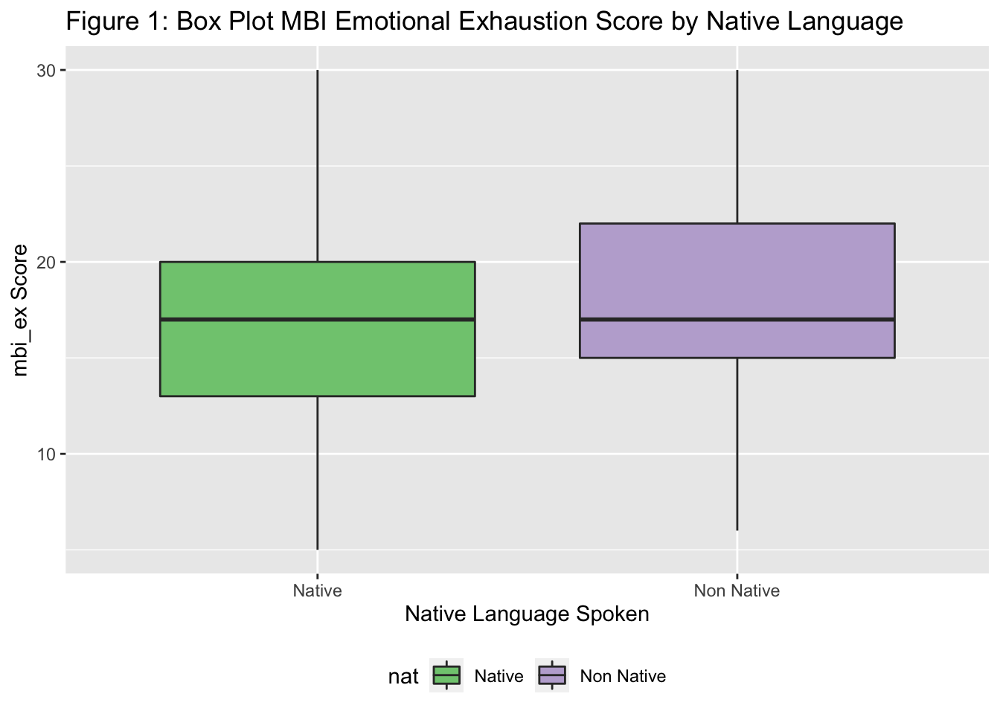
Native language speaking and non-native language speaking medical students seemed to have nearly identical median scores for Emotional Exhaustion (mbi_ex). The IQR however for non-native language speaking students does appear to start & end higher (higher Q1 & Q3 MBI-ex scores) than native students, suggesting the potential for higher emotional exhaustion burnout for non-native language speaking students.
#Cynicism Score
ggplot(data = FinalProp, aes(x = nat, y = mbi_cy, fill = nat)) + geom_boxplot() +
labs(title = "Figure 2: Box Plot MBI Cynicism Score by Native Language", x = "Native Language Spoken", y = "mbi_cy") + theme(legend.position="bottom") + scale_fill_brewer(palette="Accent")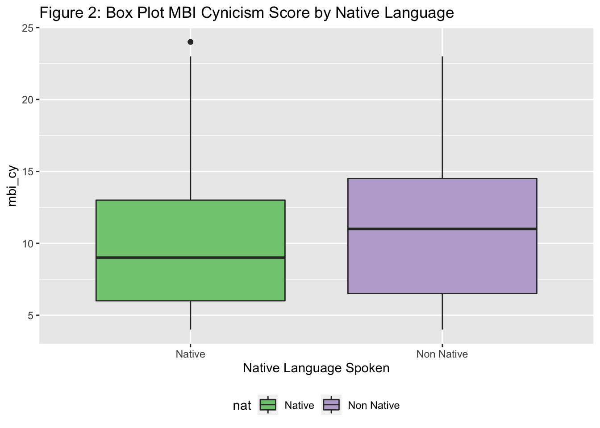
Non-native speaking medical students appeared to score slightly higher on average than non-native speaking medical students on Cynicism as measured by the mbi-cy, with a higher median score. The IQR of mbi-cy scores for non-native language speaking medical students is higher for non-native students with a higher Q1 & Q3. There appears to be one high outlier for native language speakers cynicism scores.
#Academic Efficacy Score
ggplot(data = FinalProp2, aes(x= nat, y = mbi_ea, fill = nat)) + geom_boxplot() +
labs(title = "Figure 3: Box Plot MBI Academic Efficacy Score by Native Language", x = "Native Language Spoken", y = "mbi_ea") + theme(legend.position="bottom") + scale_fill_brewer(palette="Accent")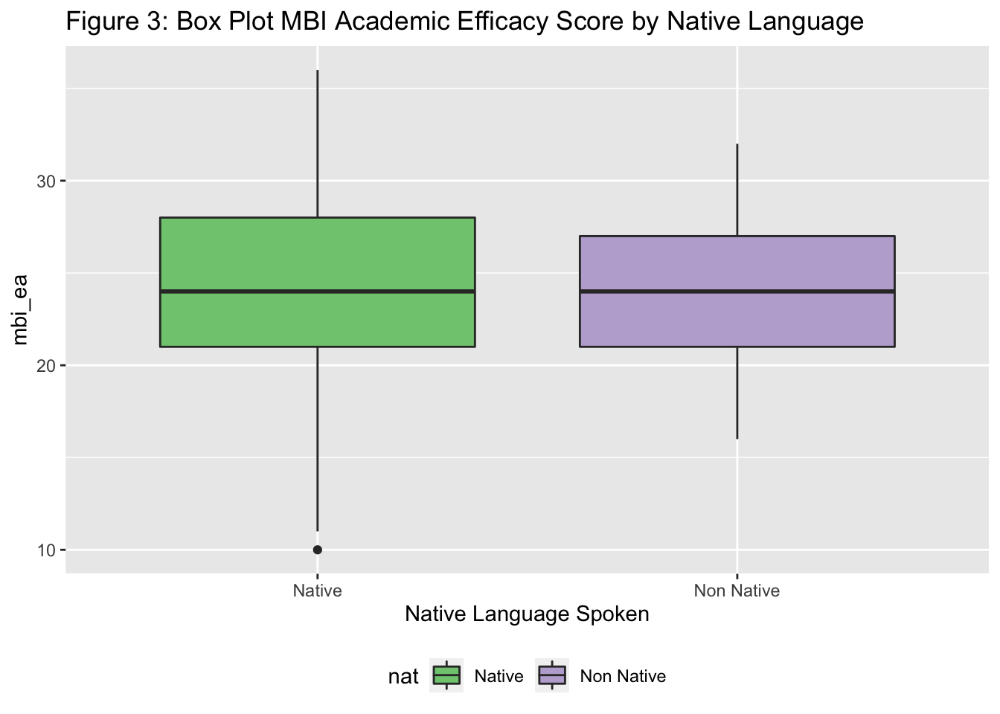
Lastly, native language speaking and non-native language speaking medical students seemed to have nearly identical median scores for Academic Efficacy burnout (mbi_ea), with one low-outlier of scores for native language speaking medical students. However non-native medical school students have a lower MBI_ea Q1 & Q3 which corresponds with higher burnout on this sub-scale.
#Depression Score
ggplot(data = FinalProp2, aes(x= nat, y = cesd, fill = nat)) + geom_boxplot() +
labs(title = "Box Plot - CESD Depression Score by Native Language", x = "Native Language Spoken", y = "CESD Score") + theme(legend.position="bottom") + scale_fill_brewer(palette="Accent")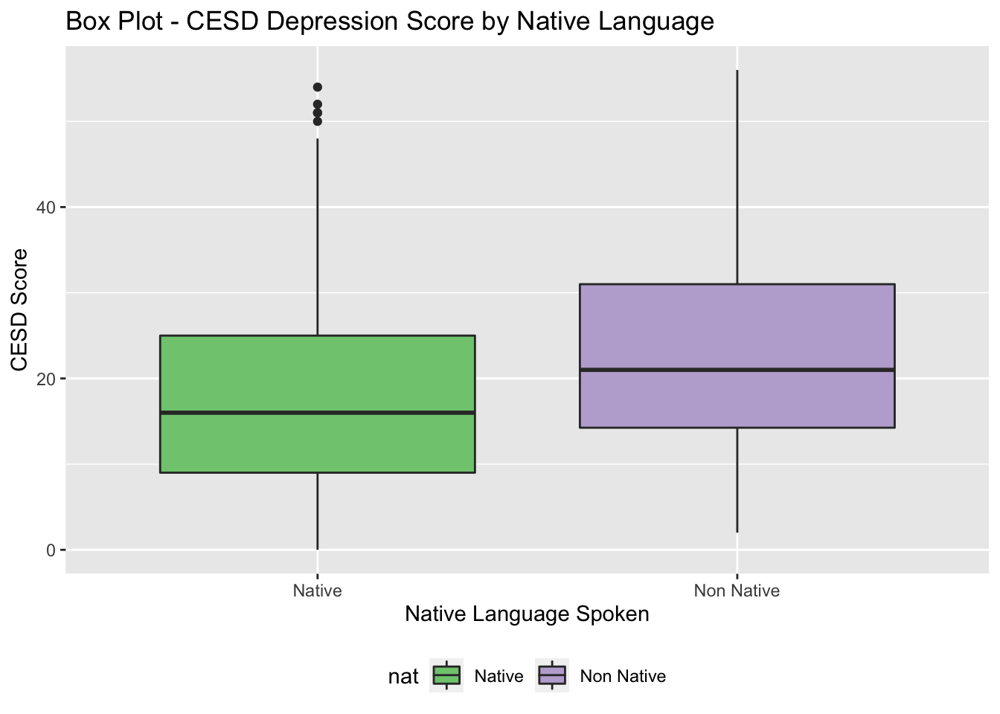
Non-native national language speakers have a higher median on CESD score than native national language speakers, suggesting higher depression among native students. The Q1 & Q3 of the non-native language speaking medical students CESD is higher than scores for native language speaking students. There are several high outliers for native and non-native language speaking students.
#Anxiety Score
ggplot(data = FinalProp2, aes(x= nat, y = stai_t, fill = nat)) + geom_boxplot() +
labs(title = "Box Plot - STAI_T Anxiety Score by Native Language", x = "Native Language Spoken", y = "stai_t Score") + theme(legend.position="bottom") + scale_fill_brewer(palette="Accent")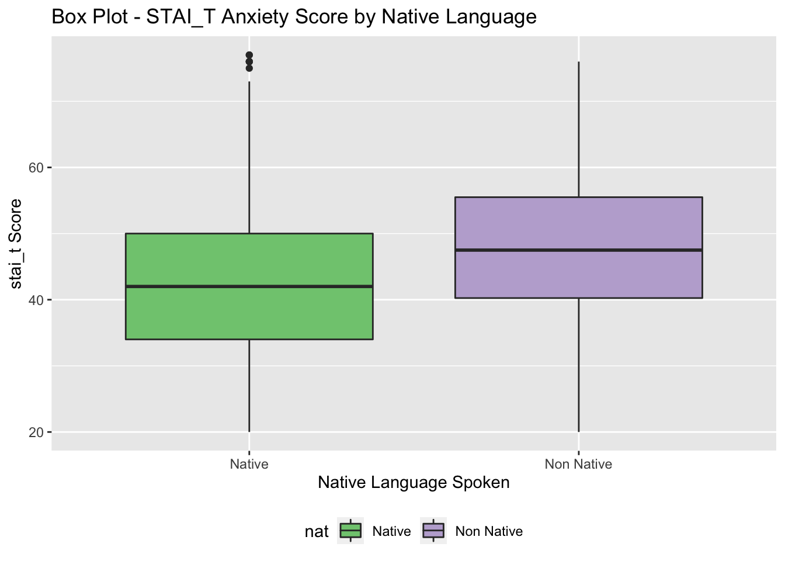
Non-native national languages speaking medical students have a higher median, Q1, & Q3 stai_t anxiety score than native language speaking medical students.Higher depression and anxiety scores may mediate the impact of speaking a native language on burnout. Anxiety and depression, as measured by STAI_T and CESD scores, will be treated as interaction terms in linear regression model, with graphic models used to evaluate this.
Previous studies on the impact of gender and burnout found that being female predicted higher burnout. In the linear regression model, I will want to control for the impact of gender on burnout scores by including it as an explanatory variable.
On the plots below, I facet wrapped the box & whiskers plot of emotional burnout comparison by native language to visualize difference in the 3 MBI burnout scales when controlled by gender.
#Emotional Exhaustion Burnout Score
ggplot(data = FinalProp2, aes(x= nat, y = mbi_ex, fill = nat)) + geom_boxplot() +
labs(title = "Figure 6: Box Plot Emotional Exhaustion Burnout by Gender & Native Language", x = "Native Language Spoken", y = "MBI_ex Score") + facet_wrap(vars(`gender`)) + theme(legend.position="bottom") + scale_fill_brewer(palette="Accent")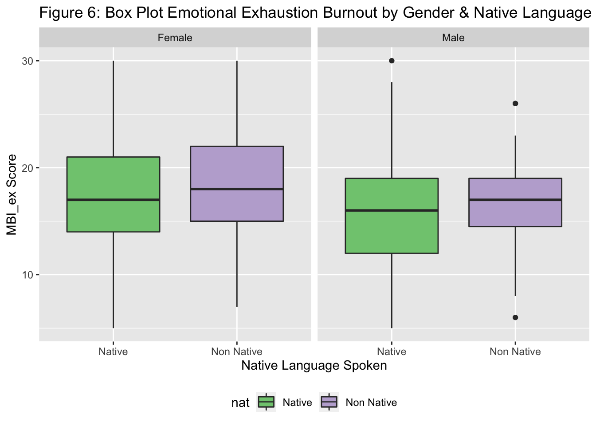
#Emotional Cynicism Burnout Score
ggplot(data = FinalProp2, aes(x= nat, y = mbi_cy, fill = nat)) + geom_boxplot() +
labs(title = "Box Plot Cynicism Burnout by Gender & Native Language", x = "Native Language Spoken", y = "MBI_cy Score") + facet_wrap(vars(`gender`)) + theme(legend.position="bottom") + scale_fill_brewer(palette="Accent")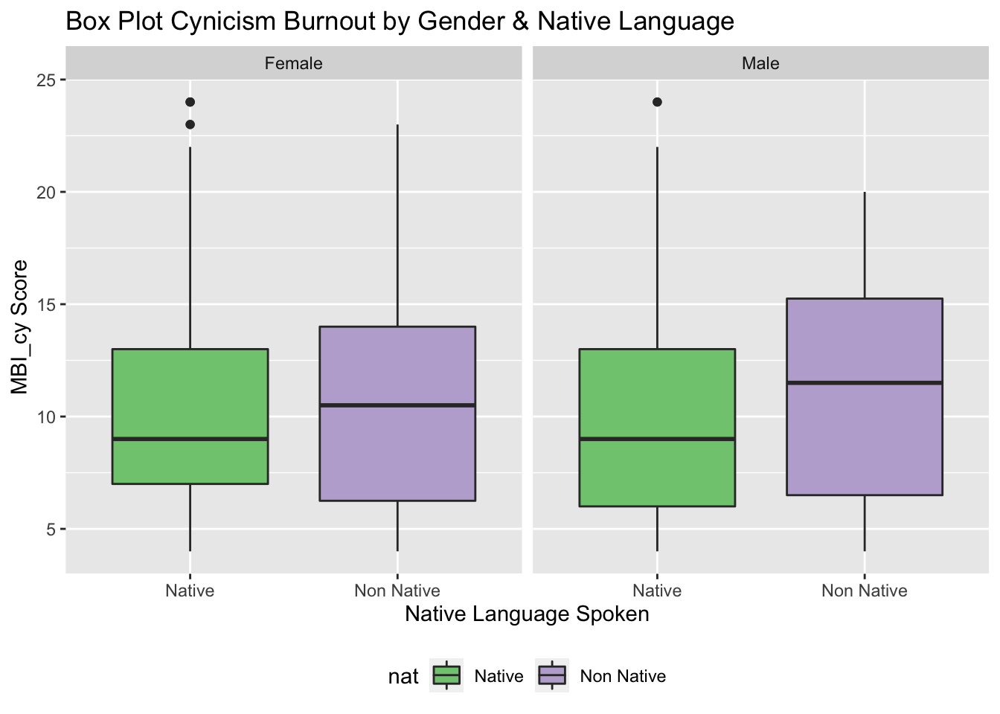
#Academic Efficacy Burnout Score
ggplot(data = FinalProp2, aes(x= nat, y = mbi_ex, fill = nat)) + geom_boxplot() +
labs(title = "Box Plot Academic Efficacy Burnout by Gender & Native Language", x = "Native Language Spoken", y = "MBI_ea Score") + facet_wrap(vars(`gender`)) + theme(legend.position="bottom") + scale_fill_brewer(palette="Accent")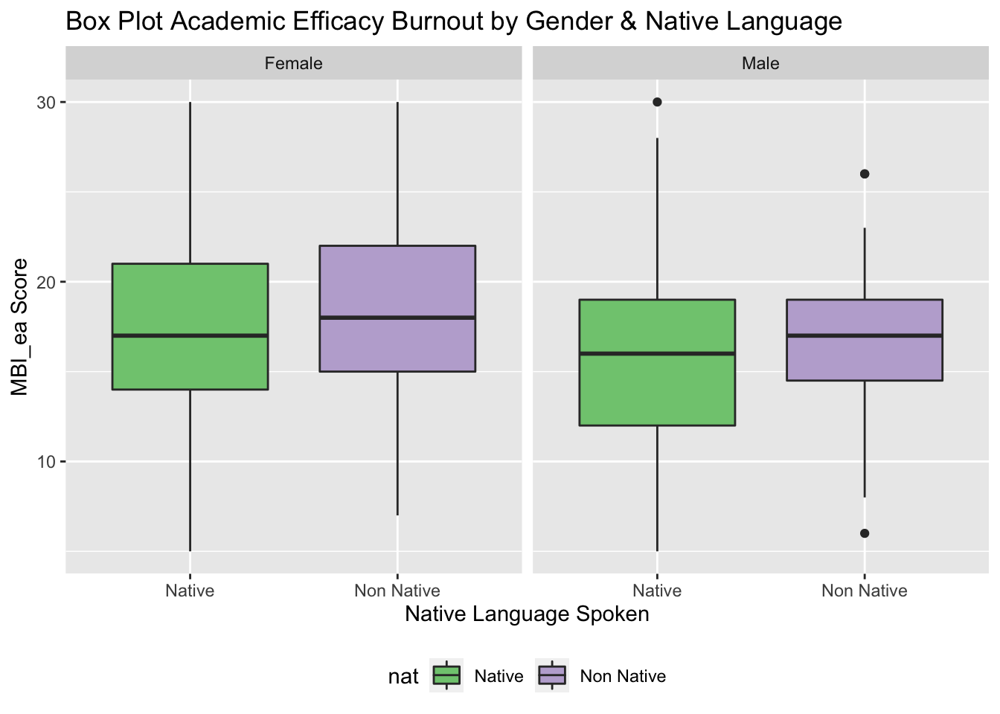
Even when controlling for gender there still seems to be a difference between the MBI scores of native and non-native language speaking MBI burnout scores. Non-native students have a higher emotional exhaustion (MBI-ex) & cynicism (MBI-cy) burnout scores for both genders. Looking at the academic efficacy score, for non-native male med students it appears to be higher than native male med students, suggesting lower academic efficacy burnout counter to my hypothesis.
In response to feedback on Check In 1, I kept categorical data coded as dummy variables 0,1 format for the linear regression. I did keep a “prop”data set record to use to calculate proportions & frequencies of categorical variables.
In deciding how to best work with the 3 MBI burnout variables, I reviewed literature on burnout and how prior researchers chose to work with the variables. A 2016 systematic review by Doulougeri et al. of 50 articles on burnout in medical staff as measured by the MBI found that the majority of studies analyzed burn out as sub scales of emotional exhaustion, cynicism (also known as depersonalization), & academic efficacy (also known as professional accomplishment), as opposed to trying to create one total scale.
This approach also aligns with the finding that burnout is often conceptualized as a multidimensional construct. Maslach designed the MBI to distinguish between the three sub-scales. Studies on burnout almost universally considered the MBI emotional exhaustion (EE) sub-scale in determining burnout, sometimes alone, sometimes with cynicism, and sometimes with both cynicism & academic efficacy. According to the literature, burn out is complex and multidimensional concepts, and impacts both an individual’s well being and their ability to perform their job as a medical professional.Burnout is conceptualized in 3 dimensions: emotional exhaustion (physical & cognitive fatigue); cynicism (de-personalization, indifference); academic efficacy (ability to do school/their job).
Based on all of these factors, I will run three separate models with each of the 3 MBI sub-scales as dependent variables.
Each MBI burnout sub-scale score will be a response variable for each of the 3 models. These scales are numeric and continuous.
As mentioned earlier, a higher score on emotional exhaustion & cynicism are considered indicative of burnout, whereas lower scores of academic efficacy are indicative of burnout.
The explanatory variable I am testing in my hypothesis is whether or not a student speaks a native language of the country they are attending medical school in, coded as a binary dummy variable (0 = non-native, 1 = native)
As previous studies have found a relationship between gender and burnout, I will need to have gender as a control variable in the model. I will also examine if I will need to also control for the influence of having a partner, having a job, or seeing a therapist in past 12 months (all also binary dummy variables) on medical student burnout, by adding them to the regression model and seeing their impact.
To test my hypothesis that Medical students whose native language is a national language of the country where they are studying will experience lower rates of burnout than medical students with other native languages, I will run a Welch’s Independent T-Test on the data to see if there is a statistically significant difference between the burnout of native and non-native medical students. Specifically, I will run a one-sided test, to see if the mean burnout of non-native students is higher than of native students.
The null hypothesis is that there is no difference in the mean burnout of native medical students than non-native medical students
The alternative hypothesis is that the mean burnout of native students is less than that non-native medical students. For the emotional exhaustion & cynicism burnout scores, higher score corresponds to higher burnout, for the academic efficacy, a lower score corresponds with higher burnout.
H0: μ = μ0
HA: μ < μ0
The first T-Test compared the emotional exhaustion scores of native and non-native language speaking medical students.
head(FinalRecoded2)# A tibble: 6 × 22
id age year sex glang part job stud_h health psyt jspe qcae_cog
<dbl> <dbl> <dbl> <dbl> <dbl> <dbl> <dbl> <dbl> <dbl> <dbl> <dbl> <dbl>
1 2 18 1 1 120 1 0 56 3 0 88 62
2 4 26 4 1 1 1 0 20 4 0 109 55
3 9 21 3 2 1 0 0 36 3 0 106 64
4 10 21 2 2 1 0 1 51 5 0 101 52
5 13 21 3 1 1 1 0 22 4 0 102 58
6 14 26 5 2 1 1 1 10 2 0 102 48
# … with 10 more variables: qcae_aff <dbl>, amsp <dbl>, erec_mean <dbl>,
# cesd <dbl>, stai_t <dbl>, mbi_ex <dbl>, mbi_cy <dbl>, mbi_ea <dbl>,
# NatLang <dbl>, gender <dbl>FinalRecoded2# A tibble: 881 × 22
id age year sex glang part job stud_h health psyt jspe qcae_cog
<dbl> <dbl> <dbl> <dbl> <dbl> <dbl> <dbl> <dbl> <dbl> <dbl> <dbl> <dbl>
1 2 18 1 1 120 1 0 56 3 0 88 62
2 4 26 4 1 1 1 0 20 4 0 109 55
3 9 21 3 2 1 0 0 36 3 0 106 64
4 10 21 2 2 1 0 1 51 5 0 101 52
5 13 21 3 1 1 1 0 22 4 0 102 58
6 14 26 5 2 1 1 1 10 2 0 102 48
7 17 23 5 2 1 1 0 15 3 0 117 58
8 21 23 4 1 1 1 1 8 4 0 118 65
9 23 23 4 2 1 1 1 20 2 0 118 69
10 24 22 2 2 1 1 0 20 5 0 108 56
# … with 871 more rows, and 10 more variables: qcae_aff <dbl>, amsp <dbl>,
# erec_mean <dbl>, cesd <dbl>, stai_t <dbl>, mbi_ex <dbl>, mbi_cy <dbl>,
# mbi_ea <dbl>, NatLang <dbl>, gender <dbl>#Ttest
Native <- subset(FinalRecoded2, FinalRecoded2$NatLang == 1)
NonNative <- subset(FinalRecoded2, FinalRecoded2$NatLang == 0)
##One side t-test, MBI ex
ttest_ex <- t.test(Native$mbi_ex, NonNative$mbi_ex, var.equal = TRUE, alternative = "less")
ttest_ex
Two Sample t-test
data: Native$mbi_ex and NonNative$mbi_ex
t = -1.932, df = 879, p-value = 0.02684
alternative hypothesis: true difference in means is less than 0
95 percent confidence interval:
-Inf -0.1861119
sample estimates:
mean of x mean of y
16.78298 18.04286 With a p-value of 0.02684 the difference between the mean is statistically significant at the 0.05 level. Therefor I reject the null hypothesis that there is no difference between the native and non-native students MBI_ex scores.
H0: μ = μ0
HA: μ < μ0
#Cynicism
ttest_cy <- t.test(Native$mbi_cy, NonNative$mbi_cy, var.equal = TRUE, alternative = "less")
ttest_cy
Two Sample t-test
data: Native$mbi_cy and NonNative$mbi_cy
t = -1.1542, df = 879, p-value = 0.1244
alternative hypothesis: true difference in means is less than 0
95 percent confidence interval:
-Inf 0.2806803
sample estimates:
mean of x mean of y
10.01356 10.67143 Next the cynicism MBI burnout scores for native and non-native scores were compared in a T-Test. With a p-value of 0.125, the difference between the means is not statistically significant at the 0.1 or the 0.05 levels. I fail to reject the null hypothesis that there is no difference between the native and non-native medical students MBI_cy scores.
H0: μ = μ0
HA: μ > μ0
Lastly, I performed a T-Test on the final MBI sub-score, the academic efficacy between native and non-native language speaking medical students. As a lower MBI_ea score corresponds with higher burnout on this sub-scale the alternative hypothesis of the one-sided T-test is that
#T-test Academic Efficacy
ttest_ea <- t.test(Native$mbi_ea, NonNative$mbi_ea, var.equal = TRUE, alternative = "greater")
ttest_ea
Two Sample t-test
data: Native$mbi_ea and NonNative$mbi_ea
t = 0.30068, df = 879, p-value = 0.3819
alternative hypothesis: true difference in means is greater than 0
95 percent confidence interval:
-0.7730962 Inf
sample estimates:
mean of x mean of y
24.24414 24.07143 With a p-value of 0.4172 the mean MBI_ea score of native medical students is not statistically significant at any level, therefor I fail to reject the null hypothesis that there is no difference between the mean academic efficacy of native & non-native language speakers.
Out of the 3 MBI burnout sub-scales, only the one-sided difference in burnout as measured on the MBI emotional exhaustion scale is statistically significant at the 0.05 level. Non-native language speking medical students had higher mean emotional exhaustion burnout scores than native language speaking benefits, indicating higher burnout in this domain.
There were no statistically significantly difference in the means of native & non-native language speaking students on the MBI cynicism & academic efficacy subscales.
I then ran Welch’s T-tests on anxiety (stai_t) and depression (CESD) scores to see if there was a statistically significant difference between native and non-native speaking medical school students. Once again I ran a one-sided t-test, with the assumption that the mean anxiety and depression of non-native language speaking medical students will be higher than that of native language speaking medical students.
H0: μ = μ0
HA: μ < μ0
# T-test Anxiety
ttest_stai_t <- t.test(Native$stai_t, NonNative$stai_t, var.equal = TRUE, alternative = "less")
ttest_stai_t
Two Sample t-test
data: Native$stai_t and NonNative$stai_t
t = -3.4511, df = 879, p-value = 0.0002925
alternative hypothesis: true difference in means is less than 0
95 percent confidence interval:
-Inf -2.676113
sample estimates:
mean of x mean of y
42.51048 47.62857 With a p-value of 0.0002955 there is strong statistical significance to reject the null hypothesis that there is no difference in the mean anxiety of native and non-native language speaking medical students. This suggests that med students who speak the non-native language experience higher anxiety levels than native-language speakers.
# T-test Depression
ttest_cesd <- t.test(Native$cesd, NonNative$cesd, var.equal = TRUE, alternative = "less")
ttest_cesd
Two Sample t-test
data: Native$cesd and NonNative$cesd
t = -3.7886, df = 879, p-value = 8.091e-05
alternative hypothesis: true difference in means is less than 0
95 percent confidence interval:
-Inf -3.038548
sample estimates:
mean of x mean of y
17.63995 23.01429 With a p-value of 9.4955e-05 there is strong statistical significance to reject the null hypothesis that there is no difference in the mean depression of native and non-native language speaking medical students. This suggests that med students who speak the non-native language experience higher depression levels than native-language speakers.
In answering my reearch question of” Why are some medical students more likely to experience burnout than others? it seems that native language status, anxiety, depression all interact on one-another to help explain burnout. This will be explored further in the linear regression models.
First, I created a linear regression model with only native language status as the explanatory variable and mbi_ex emotional exhaustion burnout score as the outcome variable. NatLang is statistically significant at the 0.1 level with a p-value of 0.0537. The negative co-efficient of -1.2599 suggests that native language speakers (1) are predicted to have lower MBI-ex scores.However the Adjusted R-squared value of 0.003096 suggests that variance in native language speaking status alone does not explain variance in emotional exhaustion MBI scores. The AIC of this first model is 5421 & the BIC is 5435, with the lower the AIC & BIC score the better the fit of the model
#Linear regression model with only NatLang as explanatory variable
model_ex_1 <- lm(mbi_ex ~ NatLang, data = FinalRecoded2)
summary(model_ex_1)
Call:
lm(formula = mbi_ex ~ NatLang, data = FinalRecoded2)
Residuals:
Min 1Q Median 3Q Max
-12.0429 -3.7830 -0.0429 3.2170 13.2170
Coefficients:
Estimate Std. Error t value Pr(>|t|)
(Intercept) 18.0429 0.6257 28.838 <2e-16 ***
NatLang -1.2599 0.6521 -1.932 0.0537 .
---
Signif. codes: 0 '***' 0.001 '**' 0.01 '*' 0.05 '.' 0.1 ' ' 1
Residual standard error: 5.235 on 879 degrees of freedom
Multiple R-squared: 0.004228, Adjusted R-squared: 0.003096
F-statistic: 3.733 on 1 and 879 DF, p-value: 0.05368## AIC
glance(model_ex_1)$AIC[1] 5420.832glance(model_ex_1)$BIC[1] 5435.175The second linear regression model includes gender as an explanatory variable along with native-language status for the outcome of emotional exhaustion MBI scores. Native-language status is statistically significant at the 0.1 level with a p-value of 0.0896 & a coefficient of -1.096. This means that speaking a native language predicts a lower MBI-ex score. Gender is statistically significant at the 0.001 level with a p-value of 1.91 x e^-06 & a coefficient of 1.8050, suggesting that being female is predicted to increase burnout. The adjusted R-squared value is higher than the first model but still low at 0.02743. The AIC value of 5400 & BIC value of 5419 is lower than the first model, suggesting better fit.
#Linear Regression model with NatLang & gender
model_ex_2 <- lm(mbi_ex ~ NatLang + gender , data = FinalRecoded2)
summary(model_ex_2)
Call:
lm(formula = mbi_ex ~ NatLang + gender, data = FinalRecoded2)
Residuals:
Min 1Q Median 3Q Max
-12.3594 -3.4554 -0.3594 3.6406 14.4456
Coefficients:
Estimate Std. Error t value Pr(>|t|)
(Intercept) 16.6504 0.6828 24.385 < 2e-16 ***
NatLang -1.0960 0.6450 -1.699 0.0896 .
gender 1.8050 0.3765 4.795 1.91e-06 ***
---
Signif. codes: 0 '***' 0.001 '**' 0.01 '*' 0.05 '.' 0.1 ' ' 1
Residual standard error: 5.17 on 878 degrees of freedom
Multiple R-squared: 0.02964, Adjusted R-squared: 0.02743
F-statistic: 13.41 on 2 and 878 DF, p-value: 1.838e-06#AIC
glance(model_ex_2)$AIC[1] 5400.061#BIC
glance(model_ex_2)$BIC[1] 5419.186In the third linear regression model was a 3-way interaction of depression (CESD), anxiety (stai_t), & native language as an explanatory variable for MBI emotional exhaustion scores in addition to gender. Adding the 3 way interaction term to the model greatly increased the predictive power of the model, raising the adjusted R-squared value to 0.3883. In this model, only Depression (cesd) is statistically significant at the 0.05 level, with a p-value of 0.0202 & a coefficient of 0.394. The positive coefficient suggests that increased depression scoreds predict increased burnout. The AIC of 4997 & the BIC of 5045 are the lowest of any model so far, suggesting the best fit.
#Linear Regression model with NatLang * Anxiety * Depression & gender explanatory variables
model_ex_3 <- lm(mbi_ex ~ gender + NatLang*cesd*stai_t , data = FinalRecoded2)
summary(model_ex_3)
Call:
lm(formula = mbi_ex ~ gender + NatLang * cesd * stai_t, data = FinalRecoded2)
Residuals:
Min 1Q Median 3Q Max
-14.0338 -2.7845 -0.1788 2.5180 14.0456
Coefficients:
Estimate Std. Error t value Pr(>|t|)
(Intercept) 8.5749820 4.0220182 2.132 0.0333 *
gender -0.0551474 0.3105581 -0.178 0.8591
NatLang -1.4582573 4.1237259 -0.354 0.7237
cesd 0.3940699 0.1693940 2.326 0.0202 *
stai_t 0.0918575 0.0931086 0.987 0.3241
NatLang:cesd -0.0544441 0.1758153 -0.310 0.7569
NatLang:stai_t 0.0502754 0.0961606 0.523 0.6012
cesd:stai_t -0.0032785 0.0029065 -1.128 0.2596
NatLang:cesd:stai_t 0.0005228 0.0030609 0.171 0.8644
---
Signif. codes: 0 '***' 0.001 '**' 0.01 '*' 0.05 '.' 0.1 ' ' 1
Residual standard error: 4.1 on 872 degrees of freedom
Multiple R-squared: 0.3939, Adjusted R-squared: 0.3883
F-statistic: 70.83 on 8 and 872 DF, p-value: < 2.2e-16#AIC
glance(model_ex_3)$AIC[1] 4997.459#BIC
glance(model_ex_3)$BIC[1] 5045.269To determine the best model, I added the control variables of hours studied, having a partner, job status, consulting a psychotherapist in past 12 months, & health satisfaction to see the impact on the adjusted R squared value of the 3-way interaction term.
##Control variables
head(FinalRecoded2)# A tibble: 6 × 22
id age year sex glang part job stud_h health psyt jspe qcae_cog
<dbl> <dbl> <dbl> <dbl> <dbl> <dbl> <dbl> <dbl> <dbl> <dbl> <dbl> <dbl>
1 2 18 1 1 120 1 0 56 3 0 88 62
2 4 26 4 1 1 1 0 20 4 0 109 55
3 9 21 3 2 1 0 0 36 3 0 106 64
4 10 21 2 2 1 0 1 51 5 0 101 52
5 13 21 3 1 1 1 0 22 4 0 102 58
6 14 26 5 2 1 1 1 10 2 0 102 48
# … with 10 more variables: qcae_aff <dbl>, amsp <dbl>, erec_mean <dbl>,
# cesd <dbl>, stai_t <dbl>, mbi_ex <dbl>, mbi_cy <dbl>, mbi_ea <dbl>,
# NatLang <dbl>, gender <dbl>##hours studied strengthens model
summary(lm(mbi_ex ~ gender + stud_h + NatLang*cesd*stai_t , data = FinalRecoded2))
Call:
lm(formula = mbi_ex ~ gender + stud_h + NatLang * cesd * stai_t,
data = FinalRecoded2)
Residuals:
Min 1Q Median 3Q Max
-13.5483 -2.7782 -0.1724 2.5784 14.1136
Coefficients:
Estimate Std. Error t value Pr(>|t|)
(Intercept) 8.060071 4.010608 2.010 0.04477 *
gender -0.012661 0.309723 -0.041 0.96740
stud_h 0.024639 0.008810 2.797 0.00528 **
NatLang -1.413266 4.107723 -0.344 0.73089
cesd 0.385072 0.168766 2.282 0.02275 *
stai_t 0.087921 0.092757 0.948 0.34346
NatLang:cesd -0.050396 0.175138 -0.288 0.77361
NatLang:stai_t 0.052124 0.095789 0.544 0.58647
cesd:stai_t -0.003130 0.002896 -1.081 0.28007
NatLang:cesd:stai_t 0.000372 0.003049 0.122 0.90293
---
Signif. codes: 0 '***' 0.001 '**' 0.01 '*' 0.05 '.' 0.1 ' ' 1
Residual standard error: 4.084 on 871 degrees of freedom
Multiple R-squared: 0.3993, Adjusted R-squared: 0.3931
F-statistic: 64.33 on 9 and 871 DF, p-value: < 2.2e-16##partner strengthened model
summary(lm(mbi_ex ~ gender + stud_h + part + NatLang*cesd*stai_t , data = FinalRecoded2))
Call:
lm(formula = mbi_ex ~ gender + stud_h + part + NatLang * cesd *
stai_t, data = FinalRecoded2)
Residuals:
Min 1Q Median 3Q Max
-13.8199 -2.7459 -0.1021 2.5393 14.2138
Coefficients:
Estimate Std. Error t value Pr(>|t|)
(Intercept) 7.2767968 4.0163840 1.812 0.07037 .
gender -0.0432849 0.3093023 -0.140 0.88874
stud_h 0.0264412 0.0088263 2.996 0.00282 **
part 0.6321501 0.2808580 2.251 0.02465 *
NatLang -1.0365435 4.1015851 -0.253 0.80055
cesd 0.4103187 0.1687467 2.432 0.01523 *
stai_t 0.0944114 0.0925864 1.020 0.30815
NatLang:cesd -0.0747001 0.1750637 -0.427 0.66970
NatLang:stai_t 0.0449907 0.0956187 0.471 0.63810
cesd:stai_t -0.0034977 0.0028936 -1.209 0.22709
NatLang:cesd:stai_t 0.0007758 0.0030476 0.255 0.79912
---
Signif. codes: 0 '***' 0.001 '**' 0.01 '*' 0.05 '.' 0.1 ' ' 1
Residual standard error: 4.075 on 870 degrees of freedom
Multiple R-squared: 0.4028, Adjusted R-squared: 0.3959
F-statistic: 58.67 on 10 and 870 DF, p-value: < 2.2e-16##having job worsened model
summary(lm(mbi_ex ~ gender + stud_h + part + job + NatLang*cesd*stai_t , data = FinalRecoded2))
Call:
lm(formula = mbi_ex ~ gender + stud_h + part + job + NatLang *
cesd * stai_t, data = FinalRecoded2)
Residuals:
Min 1Q Median 3Q Max
-13.8856 -2.7297 -0.1083 2.5207 14.1378
Coefficients:
Estimate Std. Error t value Pr(>|t|)
(Intercept) 7.4629570 4.0351276 1.849 0.06473 .
gender -0.0384731 0.3095831 -0.124 0.90113
stud_h 0.0255808 0.0089943 2.844 0.00456 **
part 0.6351052 0.2810401 2.260 0.02408 *
job -0.1485578 0.2954247 -0.503 0.61519
NatLang -1.1526960 4.1098434 -0.280 0.77918
cesd 0.4081265 0.1688755 2.417 0.01587 *
stai_t 0.0913883 0.0928211 0.985 0.32511
NatLang:cesd -0.0723212 0.1752028 -0.413 0.67987
NatLang:stai_t 0.0480548 0.0958536 0.501 0.61626
cesd:stai_t -0.0034376 0.0028973 -1.186 0.23576
NatLang:cesd:stai_t 0.0007086 0.0030519 0.232 0.81644
---
Signif. codes: 0 '***' 0.001 '**' 0.01 '*' 0.05 '.' 0.1 ' ' 1
Residual standard error: 4.077 on 869 degrees of freedom
Multiple R-squared: 0.4029, Adjusted R-squared: 0.3954
F-statistic: 53.31 on 11 and 869 DF, p-value: < 2.2e-16## seen psychiatrist worsened model
summary(lm(mbi_ex ~ gender + stud_h + part + psyt + NatLang*cesd*stai_t , data = FinalRecoded2))
Call:
lm(formula = mbi_ex ~ gender + stud_h + part + psyt + NatLang *
cesd * stai_t, data = FinalRecoded2)
Residuals:
Min 1Q Median 3Q Max
-13.8209 -2.7455 -0.1015 2.5399 14.2141
Coefficients:
Estimate Std. Error t value Pr(>|t|)
(Intercept) 7.2770334 4.0189508 1.811 0.07054 .
gender -0.0434259 0.3106611 -0.140 0.88886
stud_h 0.0264450 0.0088621 2.984 0.00292 **
part 0.6320861 0.2812878 2.247 0.02488 *
psyt 0.0018233 0.3500261 0.005 0.99585
NatLang -1.0366417 4.1039876 -0.253 0.80064
cesd 0.4103300 0.1688577 2.430 0.01530 *
stai_t 0.0943979 0.0926755 1.019 0.30868
NatLang:cesd -0.0747099 0.1751745 -0.426 0.66986
NatLang:stai_t 0.0449962 0.0956795 0.470 0.63827
cesd:stai_t -0.0034978 0.0028954 -1.208 0.22735
NatLang:cesd:stai_t 0.0007757 0.0030494 0.254 0.79926
---
Signif. codes: 0 '***' 0.001 '**' 0.01 '*' 0.05 '.' 0.1 ' ' 1
Residual standard error: 4.077 on 869 degrees of freedom
Multiple R-squared: 0.4028, Adjusted R-squared: 0.3952
F-statistic: 53.27 on 11 and 869 DF, p-value: < 2.2e-16## health sat strengthened model
summary(lm(mbi_ex ~ gender + stud_h + part + health + NatLang*cesd*stai_t , data = FinalRecoded2))
Call:
lm(formula = mbi_ex ~ gender + stud_h + part + health + NatLang *
cesd * stai_t, data = FinalRecoded2)
Residuals:
Min 1Q Median 3Q Max
-14.3802 -2.7438 -0.0997 2.5740 14.6117
Coefficients:
Estimate Std. Error t value Pr(>|t|)
(Intercept) 9.3855390 4.0585569 2.313 0.02098 *
gender -0.0349557 0.3078865 -0.114 0.90963
stud_h 0.0260806 0.0087863 2.968 0.00308 **
part 0.6633402 0.2797524 2.371 0.01795 *
health -0.4210283 0.1396429 -3.015 0.00264 **
NatLang -1.3647077 4.0840966 -0.334 0.73835
cesd 0.4141692 0.1679723 2.466 0.01387 *
stai_t 0.0847493 0.0922146 0.919 0.35833
NatLang:cesd -0.0813649 0.1742693 -0.467 0.64069
NatLang:stai_t 0.0549232 0.0952342 0.577 0.56428
cesd:stai_t -0.0036817 0.0028809 -1.278 0.20160
NatLang:cesd:stai_t 0.0007711 0.0030336 0.254 0.79940
---
Signif. codes: 0 '***' 0.001 '**' 0.01 '*' 0.05 '.' 0.1 ' ' 1
Residual standard error: 4.056 on 869 degrees of freedom
Multiple R-squared: 0.4089, Adjusted R-squared: 0.4015
F-statistic: 54.66 on 11 and 869 DF, p-value: < 2.2e-16Variables that improved model fit were:
These 3 explanatory variables will be added to the final model to improve fit. Considering that gender is related to burnout as well as anxiety & depression in earlier exploration of the data, I wanted to explore the a 4-way interaction between anxiety, burnout, gender, & native language status as explanatory for emotional exhaustion burnout.
#Linear regression model of 4 way-interaction of gender * NatLang * CES-D, * STAI-T
model_ex_4 <- lm(mbi_ex ~ stud_h + health + part + gender*NatLang*cesd*stai_t, data = FinalRecoded2)
summary(model_ex_4)
Call:
lm(formula = mbi_ex ~ stud_h + health + part + gender * NatLang *
cesd * stai_t, data = FinalRecoded2)
Residuals:
Min 1Q Median 3Q Max
-14.2858 -2.7670 -0.1719 2.5619 14.5201
Coefficients:
Estimate Std. Error t value Pr(>|t|)
(Intercept) 21.181036 6.888450 3.075 0.00217 **
stud_h 0.027423 0.008806 3.114 0.00191 **
health -0.421181 0.139864 -3.011 0.00268 **
part 0.670855 0.280743 2.390 0.01708 *
gender -18.064595 9.014920 -2.004 0.04540 *
NatLang -13.746744 6.989403 -1.967 0.04953 *
cesd 0.486711 0.425828 1.143 0.25337
stai_t -0.326192 0.189299 -1.723 0.08522 .
gender:NatLang 19.123464 9.206935 2.077 0.03809 *
gender:cesd 0.001285 0.479181 0.003 0.99786
NatLang:cesd -0.128125 0.433856 -0.295 0.76782
gender:stai_t 0.566915 0.226802 2.500 0.01262 *
NatLang:stai_t 0.475743 0.193961 2.453 0.01437 *
cesd:stai_t 0.001664 0.008698 0.191 0.84835
gender:NatLang:cesd -0.048915 0.489803 -0.100 0.92047
gender:NatLang:stai_t -0.587852 0.232808 -2.525 0.01175 *
gender:cesd:stai_t -0.007890 0.009481 -0.832 0.40554
NatLang:cesd:stai_t -0.004888 0.008881 -0.550 0.58220
gender:NatLang:cesd:stai_t 0.008595 0.009719 0.884 0.37676
---
Signif. codes: 0 '***' 0.001 '**' 0.01 '*' 0.05 '.' 0.1 ' ' 1
Residual standard error: 4.052 on 862 degrees of freedom
Multiple R-squared: 0.415, Adjusted R-squared: 0.4028
F-statistic: 33.97 on 18 and 862 DF, p-value: < 2.2e-16#AIC
glance(model_ex_4)$AIC[1] 4986.242#BIC
glance(model_ex_4)$BIC [1] 5081.863The best-fitting linear regression model for MBI_ex as determined by adjusted R-squared includes gender, hours studied, health satisfaction, having a partner, and 4-way interaction between gender, native language, depression, and anxiety as explanatory variables. This has an Adjusted R-Squared value of 0.4028, suggesting much of the the variance in MBI emotional exhaustion scores of medical school students is explained by variance in the explanatory variables. The AIC value of 4986 is the lowest of any of the linear regression models, however the BIC of 5081 is higher than in the previous model.
Explanatory variables significant at the 0.01 level are:
Explanatory variables significant at the 0.05 level are:
Explanatory variables significant at the 0.1 level are:
Generally, a 4-way interaction would not be selected for a model, but in this linear regression model my explanatory variable of interest, Native Language (NatLang) is statistically significant at the 0.05 level, as is its 2-way interaction with gender, its 2-way interaction with anxiety (stai_t), & its 3-way interaction with gender & anxiety. I tried generating a 3-way interaction model of gender* NatLang*stai_t but this interaction was only significant in the 4-way interaction model. National Language is only statistically significant when depression (CES-D) is included in the interaction, though depression itself is not statistically signficant or in any statistically significant interactions.
Examining the coefficients of the statistically significant explanatory variables in the 4-way interaction model:
The predicted impact of the these interactions on the emotional exhaustion score aren’t what one would have expected based on previous studies on the role of gender on burnout. Starting with the single explanatory terms,the coefficients for native language, hours studied, & health make sense in directionality. Speaking a native language & being satisfied with your health are predicted to decreases mbi_ex score, while studying more hours is expected to increase mbi_ex schools. Being female & having a higher STAI_T anxiety being predicted to decrease mbi-ex score & having a partner being predicted to increase mbi_ex score are counter to what one would expect.
The statistically significant 2 & 3-way interactions are somewhat confusing, which is one of the reasons 4-way interactions are not commonly used.In the 2-way interaction of gender & native language, being female & speaking a native language is predicted to increase mbi_ex score, which is the opposite predicted impact of either explanatory variables on it own. An increase anxiety score for a female in the 2-way interaction between gender & anxiety (STAI-T) is predicted to increase mbi_ex score, once again the opposite predicted impact of either explanatory variable on its own. The increase in anxiety score for a native language speaker is also predicted to increase the mbi_ex score according to the 2-way interaction of native language & anxiety. Lastly, in the 3 way interaction between native language, gender, & anxiety, for a female medical student that speaks a native language, an increase in anxiety score is predicted to decrease mbi_ex score. As mentioned, not all of these coefficients make sense. It makes sense that anxiety, gender, & native language all interact with one another & impact emotional exhaustion burnout. Further research is required to understand these interactions, & if there are unexpected protective factors found from having multiple factors that on their own might increase emotional exhaustion burnout. For example, for the 3-way interaction between native language, gender, & anxiety, potentially being a female medical student who speaks a native language may bring social support that mitigates anxiety increasing mbi_ex burnout.
##Emotional Exhaustion Stargazer model
stargazer(model_ex_1, model_ex_2, model_ex_3, model_ex_4, align = TRUE, column.sep.width = "-1pt", no.space = TRUE, type = "text", title="Table 3: Comparison MBI Emotional Exhaustion Regression Results", column.labels=c("Model 1","Model 2", "Model 3", "Model 4"))
Table 3: Comparison MBI Emotional Exhaustion Regression Results
========================================================================================================================
Dependent variable:
---------------------------------------------------------------------------------------------
mbi_ex
Model 1 Model 2 Model 3 Model 4
(1) (2) (3) (4)
------------------------------------------------------------------------------------------------------------------------
stud_h 0.027***
(0.009)
health -0.421***
(0.140)
part 0.671**
(0.281)
NatLang -1.260* -1.096* -1.458 -13.747**
(0.652) (0.645) (4.124) (6.989)
cesd 0.394** 0.487
(0.169) (0.426)
stai_t 0.092 -0.326*
(0.093) (0.189)
gender:NatLang 19.123**
(9.207)
gender:cesd 0.001
(0.479)
NatLang:cesd -0.054 -0.128
(0.176) (0.434)
gender:stai_t 0.567**
(0.227)
NatLang:stai_t 0.050 0.476**
(0.096) (0.194)
cesd:stai_t -0.003 0.002
(0.003) (0.009)
gender:NatLang:cesd -0.049
(0.490)
gender:NatLang:stai_t -0.588**
(0.233)
gender:cesd:stai_t -0.008
(0.009)
NatLang:cesd:stai_t 0.001 -0.005
(0.003) (0.009)
gender:NatLang:cesd:stai_t 0.009
(0.010)
gender 1.805*** -0.055 -18.065**
(0.376) (0.311) (9.015)
Constant 18.043*** 16.650*** 8.575** 21.181***
(0.626) (0.683) (4.022) (6.888)
------------------------------------------------------------------------------------------------------------------------
Observations 881 881 881 881
R2 0.004 0.030 0.394 0.415
Adjusted R2 0.003 0.027 0.388 0.403
Residual Std. Error 5.235 (df = 879) 5.170 (df = 878) 4.100 (df = 872) 4.052 (df = 862)
F Statistic 3.733* (df = 1; 879) 13.407*** (df = 2; 878) 70.834*** (df = 8; 872) 33.971*** (df = 18; 862)
========================================================================================================================
Note: *p<0.1; **p<0.05; ***p<0.01For the cynicism burnout sub scale, I once again started by running a linear regression model with only Native Language as the explanatory variable and mbi_cy score as the outcome variable. NatLang was not a statistically significant explanatory variable with a p-value of 0.249. The Adjusted R-Squared of the model was very low at 0.0003772, suggesting that variance NatLang alone does not explain the variance in mbi_cy scores for medical students. The AIC of 5184 & BIC of 5198 serves as a baseline for comparison for goodness of fit with future models.
#MBI-cy only nat lang as explanatory variables
model_cy_1 <- lm(mbi_cy ~ NatLang, data = FinalRecoded2)
summary(model_cy_1)
Call:
lm(formula = mbi_cy ~ NatLang, data = FinalRecoded2)
Residuals:
Min 1Q Median 3Q Max
-6.671 -4.014 -1.014 2.986 13.986
Coefficients:
Estimate Std. Error t value Pr(>|t|)
(Intercept) 10.6714 0.5469 19.513 <2e-16 ***
NatLang -0.6579 0.5700 -1.154 0.249
---
Signif. codes: 0 '***' 0.001 '**' 0.01 '*' 0.05 '.' 0.1 ' ' 1
Residual standard error: 4.576 on 879 degrees of freedom
Multiple R-squared: 0.001513, Adjusted R-squared: 0.0003772
F-statistic: 1.332 on 1 and 879 DF, p-value: 0.2487#AIC
glance(model_cy_1)$AIC[1] 5183.681#BIC
glance(model_cy_1)$BIC[1] 5198.024As with the previous emotional exhaustion sub-scale, next I added gender as a the second explanatory variable, as the impact of gender on burnout has been studied. Not only were neither NatLang or gender statistically significant (p-values of 0.256 and 0.783 respectively), but the linear regression model with gender & NatLang as explanatory variables had a worse Adjusted R-Squared than the first model with a negative R-squared of -0.0006754. The AIC of 5185 & BIC of 5204 are higher than in the first model, confirming the worse fit of this model.
#MBI-cy nat lang & gender as explanatory variables
model_cy_2 <- lm(mbi_cy ~ NatLang + gender, data = FinalRecoded2)
summary(model_cy_2)
Call:
lm(formula = mbi_cy ~ NatLang + gender, data = FinalRecoded2)
Residuals:
Min 1Q Median 3Q Max
-6.6923 -3.9513 -0.9513 2.9572 14.0487
Coefficients:
Estimate Std. Error t value Pr(>|t|)
(Intercept) 10.60086 0.60458 17.534 <2e-16 ***
NatLang -0.64956 0.57110 -1.137 0.256
gender 0.09148 0.33332 0.274 0.784
---
Signif. codes: 0 '***' 0.001 '**' 0.01 '*' 0.05 '.' 0.1 ' ' 1
Residual standard error: 4.578 on 878 degrees of freedom
Multiple R-squared: 0.001599, Adjusted R-squared: -0.0006754
F-statistic: 0.703 on 2 and 878 DF, p-value: 0.4954#AIC
glance(model_cy_2)$AIC[1] 5185.606#BIC
glance(model_cy_2)$BIC[1] 5204.73For the third linear regression model I added the 3 way interaction of NatLang x Anxiety (stai-t score) x Depression (cesd) as an explanatory variable to gender in model 2. In this model, only gender is statistically significant at the 0.01 level with a p-value of 0.00115 & a coefficient of -1.0259, suggesting being a female is predicted to decreases MBI-cy scores. The Adjusted R-Squared 0f 0.1769, AIC of 5019 & 5067 suggest this is the best fitting model.
#Model 3 MBI_cy 3 way interaction NatLang x cesd x stai_t + gender
model_cy_3 = lm(mbi_cy ~ gender + NatLang*cesd*stai_t , data = FinalRecoded2)
summary(model_cy_3)
Call:
lm(formula = mbi_cy ~ gender + NatLang * cesd * stai_t, data = FinalRecoded2)
Residuals:
Min 1Q Median 3Q Max
-10.3570 -3.1360 -0.6554 2.4028 15.6703
Coefficients:
Estimate Std. Error t value Pr(>|t|)
(Intercept) 2.703013 4.072554 0.664 0.50705
gender -1.025924 0.314460 -3.262 0.00115 **
NatLang 3.266459 4.175540 0.782 0.43426
cesd 0.249619 0.171522 1.455 0.14594
stai_t 0.111180 0.094279 1.179 0.23861
NatLang:cesd -0.064808 0.178024 -0.364 0.71591
NatLang:stai_t -0.059324 0.097369 -0.609 0.54250
cesd:stai_t -0.001900 0.002943 -0.646 0.51862
NatLang:cesd:stai_t 0.001046 0.003099 0.338 0.73579
---
Signif. codes: 0 '***' 0.001 '**' 0.01 '*' 0.05 '.' 0.1 ' ' 1
Residual standard error: 4.152 on 872 degrees of freedom
Multiple R-squared: 0.1844, Adjusted R-squared: 0.1769
F-statistic: 24.64 on 8 and 872 DF, p-value: < 2.2e-16#AIC
glance(model_cy_3)$AIC[1] 5019.46#BIC
glance(model_cy_3)$BIC[1] 5067.27To determine the best model, I added the control variables of hours studied, having a partner, job status, consulting a psychotherapist in past 12 months, & health satisfaction to see the impact on the adjusted R squared value.
##Control variables
##hours studied strengthens model
summary(lm(mbi_cy ~ gender + stud_h + NatLang*cesd*stai_t , data = FinalRecoded2))
Call:
lm(formula = mbi_cy ~ gender + stud_h + NatLang * cesd * stai_t,
data = FinalRecoded2)
Residuals:
Min 1Q Median 3Q Max
-10.6866 -2.9484 -0.4393 2.4740 15.8145
Coefficients:
Estimate Std. Error t value Pr(>|t|)
(Intercept) 3.722222 4.009230 0.928 0.353451
gender -1.110020 0.309617 -3.585 0.000356 ***
stud_h -0.048770 0.008807 -5.537 4.06e-08 ***
NatLang 3.177403 4.106312 0.774 0.439268
cesd 0.267431 0.168708 1.585 0.113291
stai_t 0.118972 0.092725 1.283 0.199813
NatLang:cesd -0.072822 0.175078 -0.416 0.677556
NatLang:stai_t -0.062984 0.095756 -0.658 0.510869
cesd:stai_t -0.002195 0.002895 -0.758 0.448563
NatLang:cesd:stai_t 0.001345 0.003048 0.441 0.659257
---
Signif. codes: 0 '***' 0.001 '**' 0.01 '*' 0.05 '.' 0.1 ' ' 1
Residual standard error: 4.083 on 871 degrees of freedom
Multiple R-squared: 0.2121, Adjusted R-squared: 0.204
F-statistic: 26.06 on 9 and 871 DF, p-value: < 2.2e-16##partner - lowered adjusted r-squared
summary(lm(mbi_cy ~ gender + stud_h + part + NatLang*cesd*stai_t , data = FinalRecoded2))
Call:
lm(formula = mbi_cy ~ gender + stud_h + part + NatLang * cesd *
stai_t, data = FinalRecoded2)
Residuals:
Min 1Q Median 3Q Max
-10.772 -2.949 -0.474 2.486 15.751
Coefficients:
Estimate Std. Error t value Pr(>|t|)
(Intercept) 3.501753 4.025753 0.870 0.384629
gender -1.118640 0.310024 -3.608 0.000326 ***
stud_h -0.048263 0.008847 -5.455 6.37e-08 ***
part 0.177932 0.281513 0.632 0.527516
NatLang 3.283440 4.111153 0.799 0.424702
cesd 0.274537 0.169140 1.623 0.104924
stai_t 0.120799 0.092802 1.302 0.193371
NatLang:cesd -0.079663 0.175472 -0.454 0.649948
NatLang:stai_t -0.064992 0.095842 -0.678 0.497877
cesd:stai_t -0.002298 0.002900 -0.792 0.428353
NatLang:cesd:stai_t 0.001458 0.003055 0.477 0.633210
---
Signif. codes: 0 '***' 0.001 '**' 0.01 '*' 0.05 '.' 0.1 ' ' 1
Residual standard error: 4.084 on 870 degrees of freedom
Multiple R-squared: 0.2125, Adjusted R-squared: 0.2034
F-statistic: 23.47 on 10 and 870 DF, p-value: < 2.2e-16##having job - lowered adjusted r-squared
summary(lm(mbi_cy ~ gender + stud_h + job + NatLang*cesd*stai_t , data = FinalRecoded2))
Call:
lm(formula = mbi_cy ~ gender + stud_h + job + NatLang * cesd *
stai_t, data = FinalRecoded2)
Residuals:
Min 1Q Median 3Q Max
-10.6235 -2.9342 -0.4671 2.4881 15.8699
Coefficients:
Estimate Std. Error t value Pr(>|t|)
(Intercept) 3.538480 4.028776 0.878 0.38002
gender -1.114817 0.309910 -3.597 0.00034 ***
stud_h -0.047929 0.008980 -5.338 1.2e-07 ***
job 0.143800 0.295950 0.486 0.62717
NatLang 3.291540 4.114825 0.800 0.42397
cesd 0.269667 0.168845 1.597 0.11060
stai_t 0.121928 0.092965 1.312 0.19002
NatLang:cesd -0.075235 0.175225 -0.429 0.66777
NatLang:stai_t -0.065982 0.095997 -0.687 0.49205
cesd:stai_t -0.002254 0.002899 -0.778 0.43691
NatLang:cesd:stai_t 0.001411 0.003053 0.462 0.64395
---
Signif. codes: 0 '***' 0.001 '**' 0.01 '*' 0.05 '.' 0.1 ' ' 1
Residual standard error: 4.085 on 870 degrees of freedom
Multiple R-squared: 0.2123, Adjusted R-squared: 0.2033
F-statistic: 23.45 on 10 and 870 DF, p-value: < 2.2e-16## seen psychiatrist - did not improve R-squared
summary(lm(mbi_cy ~ gender + stud_h + psyt + NatLang*cesd*stai_t , data = FinalRecoded2))
Call:
lm(formula = mbi_cy ~ gender + stud_h + psyt + NatLang * cesd *
stai_t, data = FinalRecoded2)
Residuals:
Min 1Q Median 3Q Max
-10.4572 -2.9218 -0.5125 2.4757 15.8605
Coefficients:
Estimate Std. Error t value Pr(>|t|)
(Intercept) 3.751392 4.009500 0.936 0.349725
gender -1.136738 0.310863 -3.657 0.000271 ***
stud_h -0.048024 0.008842 -5.432 7.25e-08 ***
psyt 0.338149 0.350199 0.966 0.334517
NatLang 3.166259 4.106488 0.771 0.440894
cesd 0.270001 0.168736 1.600 0.109930
stai_t 0.116605 0.092761 1.257 0.209076
NatLang:cesd -0.075098 0.175100 -0.429 0.668112
NatLang:stai_t -0.062098 0.095764 -0.648 0.516869
cesd:stai_t -0.002227 0.002895 -0.769 0.441934
NatLang:cesd:stai_t 0.001332 0.003049 0.437 0.662237
---
Signif. codes: 0 '***' 0.001 '**' 0.01 '*' 0.05 '.' 0.1 ' ' 1
Residual standard error: 4.083 on 870 degrees of freedom
Multiple R-squared: 0.213, Adjusted R-squared: 0.2039
F-statistic: 23.54 on 10 and 870 DF, p-value: < 2.2e-16## health sat - improved model
summary(lm(mbi_cy ~ gender + stud_h + health + NatLang*cesd*stai_t , data = FinalRecoded2))
Call:
lm(formula = mbi_cy ~ gender + stud_h + health + NatLang * cesd *
stai_t, data = FinalRecoded2)
Residuals:
Min 1Q Median 3Q Max
-10.8162 -2.9928 -0.4667 2.4683 15.9657
Coefficients:
Estimate Std. Error t value Pr(>|t|)
(Intercept) 4.698604 4.070738 1.154 0.248719
gender -1.105546 0.309482 -3.572 0.000373 ***
stud_h -0.048975 0.008804 -5.563 3.54e-08 ***
health -0.191435 0.140404 -1.363 0.173092
NatLang 3.019741 4.105918 0.735 0.462257
cesd 0.268615 0.168627 1.593 0.111534
stai_t 0.114433 0.092739 1.234 0.217566
NatLang:cesd -0.075307 0.175001 -0.430 0.667067
NatLang:stai_t -0.058308 0.095770 -0.609 0.542796
cesd:stai_t -0.002270 0.002894 -0.784 0.432989
NatLang:cesd:stai_t 0.001333 0.003047 0.438 0.661762
---
Signif. codes: 0 '***' 0.001 '**' 0.01 '*' 0.05 '.' 0.1 ' ' 1
Residual standard error: 4.081 on 870 degrees of freedom
Multiple R-squared: 0.2138, Adjusted R-squared: 0.2048
F-statistic: 23.66 on 10 and 870 DF, p-value: < 2.2e-16#Model 4
MBI_cy_bestfit <- lm(mbi_cy ~ gender + stud_h + health + NatLang*cesd*stai_t, data = FinalRecoded2)
summary(MBI_cy_bestfit)
Call:
lm(formula = mbi_cy ~ gender + stud_h + health + NatLang * cesd *
stai_t, data = FinalRecoded2)
Residuals:
Min 1Q Median 3Q Max
-10.8162 -2.9928 -0.4667 2.4683 15.9657
Coefficients:
Estimate Std. Error t value Pr(>|t|)
(Intercept) 4.698604 4.070738 1.154 0.248719
gender -1.105546 0.309482 -3.572 0.000373 ***
stud_h -0.048975 0.008804 -5.563 3.54e-08 ***
health -0.191435 0.140404 -1.363 0.173092
NatLang 3.019741 4.105918 0.735 0.462257
cesd 0.268615 0.168627 1.593 0.111534
stai_t 0.114433 0.092739 1.234 0.217566
NatLang:cesd -0.075307 0.175001 -0.430 0.667067
NatLang:stai_t -0.058308 0.095770 -0.609 0.542796
cesd:stai_t -0.002270 0.002894 -0.784 0.432989
NatLang:cesd:stai_t 0.001333 0.003047 0.438 0.661762
---
Signif. codes: 0 '***' 0.001 '**' 0.01 '*' 0.05 '.' 0.1 ' ' 1
Residual standard error: 4.081 on 870 degrees of freedom
Multiple R-squared: 0.2138, Adjusted R-squared: 0.2048
F-statistic: 23.66 on 10 and 870 DF, p-value: < 2.2e-16#AIC
glance(MBI_cy_bestfit)$AIC[1] 4991.097#BIC
glance(MBI_cy_bestfit)$BIC[1] 5048.47Variables that increased the adjusted r-squared of the model were:
A 4-way interaction model for MBI-cy did not improve the prediction of MBI-cy like it did in the MBI-ex.The best-fitting linear regression model for MBI_cy as determined by adjusted R-squared values & AIC & BIC includes gender, hours studied, health satisfaction, and the 3-way interaction between native language, depression, and anxiety as explanatory variables. This has an Adjusted R-Squared value of 0.2048, suggesting some of the the variance in MBI cynicism scores of medical school students is explained by variance in the explanatory variables. The AIC of 4991 & BIC of 5048 also confirms this is the best-fitting model.
Explanatory variables significant at the 0.001 level are:
In this model, gender has a coefficient of -1.105546, suggesting being female is predicted to decrease MBI-cy score. Hours studying has a coefficient of -0.048975, suggesting that studying more hours predicts lower MBI-cy score. These coefficients are both counter to what would be expected.
##Cynicism Stargazer model
stargazer(model_cy_1, model_cy_2, model_cy_3, MBI_cy_bestfit, align = TRUE, column.sep.width = "-1pt", no.space = TRUE, type = "text", title="Table 4: Comparison MBI Cynicism Regression Results", column.labels=c("Model 1","Model 2", "Model 3", "Model 4"))
Table 4: Comparison MBI Cynicism Regression Results
============================================================================================================
Dependent variable:
----------------------------------------------------------------------------------------
mbi_cy
Model 1 Model 2 Model 3 Model 4
(1) (2) (3) (4)
------------------------------------------------------------------------------------------------------------
NatLang -0.658 -0.650 3.266 3.020
(0.570) (0.571) (4.176) (4.106)
cesd 0.250 0.269
(0.172) (0.169)
stai_t 0.111 0.114
(0.094) (0.093)
NatLang:cesd -0.065 -0.075
(0.178) (0.175)
NatLang:stai_t -0.059 -0.058
(0.097) (0.096)
cesd:stai_t -0.002 -0.002
(0.003) (0.003)
NatLang:cesd:stai_t 0.001 0.001
(0.003) (0.003)
gender 0.091 -1.026*** -1.106***
(0.333) (0.314) (0.309)
stud_h -0.049***
(0.009)
health -0.191
(0.140)
Constant 10.671*** 10.601*** 2.703 4.699
(0.547) (0.605) (4.073) (4.071)
------------------------------------------------------------------------------------------------------------
Observations 881 881 881 881
R2 0.002 0.002 0.184 0.214
Adjusted R2 0.0004 -0.001 0.177 0.205
Residual Std. Error 4.576 (df = 879) 4.578 (df = 878) 4.152 (df = 872) 4.081 (df = 870)
F Statistic 1.332 (df = 1; 879) 0.703 (df = 2; 878) 24.641*** (df = 8; 872) 23.659*** (df = 10; 870)
============================================================================================================
Note: *p<0.1; **p<0.05; ***p<0.01As with the prior 2 MBI sub-scales, I first created a linear regression model with NatLang as the only explanatory variable and academic efficacy burnout MBI_ea as the outcome. NatLang is not a statistically significant explanatory variable in the model with a p-value of 0.764. The Adjusted R-squared of -0.001035 shows the model is a very bad for predicting the outcome variable MBI_ea score. The AIC of this model is 5197 & BIC of this model is 5212.
#Academic Efficacy NatLang Alone
model_ea_1 <- lm(mbi_ea ~ NatLang, data = FinalRecoded2)
summary(model_ea_1)
Call:
lm(formula = mbi_ea ~ NatLang, data = FinalRecoded2)
Residuals:
Min 1Q Median 3Q Max
-14.2441 -3.2441 -0.2441 3.7559 11.7559
Coefficients:
Estimate Std. Error t value Pr(>|t|)
(Intercept) 24.0714 0.5511 43.678 <2e-16 ***
NatLang 0.1727 0.5744 0.301 0.764
---
Signif. codes: 0 '***' 0.001 '**' 0.01 '*' 0.05 '.' 0.1 ' ' 1
Residual standard error: 4.611 on 879 degrees of freedom
Multiple R-squared: 0.0001028, Adjusted R-squared: -0.001035
F-statistic: 0.09041 on 1 and 879 DF, p-value: 0.7637#AIC
glance(model_ea_1)$AIC[1] 5197.268#BIC
glance(model_ea_1)$BIC[1] 5211.611For the second model, I added the second explanatory variable of gender, based on previous findings of its impact on burnout. In this model, neither NatLang (p-value = 0.801) or gender (p-value = 0.363) are statistically significant. The fit of the model is still very poor, as indicated by the Adjusted R-squared of -0.001231. Still, very little of the variance in academic efficacy burnout is explained by the variance in gender and native language status. The AIC & BIC are slightly higher at 5198 at 5218, suggesting a poor fit of this model compared to the previous model.
#Linear regression model NatLang & gender
model_ea_2 <- lm(mbi_ea ~ NatLang + gender, data = FinalRecoded2)
summary(model_ea_2)
Call:
lm(formula = mbi_ea ~ NatLang + gender, data = FinalRecoded2)
Residuals:
Min 1Q Median 3Q Max
-14.4521 -3.1466 -0.1466 3.5479 11.8534
Coefficients:
Estimate Std. Error t value Pr(>|t|)
(Intercept) 24.3071 0.6090 39.913 <2e-16 ***
NatLang 0.1450 0.5753 0.252 0.801
gender -0.3055 0.3358 -0.910 0.363
---
Signif. codes: 0 '***' 0.001 '**' 0.01 '*' 0.05 '.' 0.1 ' ' 1
Residual standard error: 4.611 on 878 degrees of freedom
Multiple R-squared: 0.001045, Adjusted R-squared: -0.001231
F-statistic: 0.4591 on 2 and 878 DF, p-value: 0.632#AIC
glance(model_ea_2)$AIC[1] 5198.438#BIC
glance(model_ea_2)$BIC[1] 5217.562For the third linear regression model, I added the 3-way interaction of NatLang x Depression (cesd) x Anxiety (stai_t) as an explanatory variable in addition to gender, with the outcome variable of mbi_ea score. In this model, gender is statistically significant at the 0.001 level with a p-value of 0.00167 & a coefficient of 1.13175. The positive coefficient suggests being female medical student predicts increased academic efficacy scores, which translate to lower burnout. This is counter to the expectation that women experience worse burnout than men. The Adjusted R-Squared of this model is 0.261, suggesting a much better fit than prior models. The AIC of 4937 & BIC of 4985 are the lowest of the models so far, also suggesting the best fit.
##Model with gender & 3 way interaction NatLang x Depression x Anxiety
model_ea_3 <- lm(mbi_ea ~ gender + NatLang*cesd*stai_t, data = FinalRecoded2)
summary(model_ea_3)
Call:
lm(formula = mbi_ea ~ gender + NatLang * cesd * stai_t, data = FinalRecoded2)
Residuals:
Min 1Q Median 3Q Max
-15.1109 -2.5462 0.0327 2.5598 15.3027
Coefficients:
Estimate Std. Error t value Pr(>|t|)
(Intercept) 27.813080 3.885897 7.157 1.74e-12 ***
gender 1.131753 0.300048 3.772 0.000173 ***
NatLang 4.651150 3.984162 1.167 0.243364
cesd -0.011546 0.163661 -0.071 0.943774
stai_t -0.050205 0.089957 -0.558 0.576925
NatLang:cesd -0.218781 0.169865 -1.288 0.198098
NatLang:stai_t -0.118535 0.092906 -1.276 0.202344
cesd:stai_t -0.001632 0.002808 -0.581 0.561367
NatLang:cesd:stai_t 0.004288 0.002957 1.450 0.147380
---
Signif. codes: 0 '***' 0.001 '**' 0.01 '*' 0.05 '.' 0.1 ' ' 1
Residual standard error: 3.962 on 872 degrees of freedom
Multiple R-squared: 0.2678, Adjusted R-squared: 0.261
F-statistic: 39.86 on 8 and 872 DF, p-value: < 2.2e-16#AIC
glance(model_ea_3)$AIC[1] 4936.793#BIC
glance(model_ea_3)$BIC[1] 4984.603To determine the best model, I added the control variables of hours studied, having a partner, job status, consulting a psychotherapist in past 12 months, & health satisfaction to see the impact on the adjusted R squared value. I also tried the 4 way interaction model between gender x natlang x CES-D x STAI-T to predict MBI academic efficacy, but this did not improve the fit of the model or make natlang statistically significant.
##Control variables
##hours studied strengthens model
summary(lm(mbi_ea ~ gender + stud_h + NatLang*cesd*stai_t , data = FinalRecoded2))
Call:
lm(formula = mbi_ea ~ gender + stud_h + NatLang * cesd * stai_t,
data = FinalRecoded2)
Residuals:
Min 1Q Median 3Q Max
-13.8518 -2.3631 0.0706 2.3959 14.1986
Coefficients:
Estimate Std. Error t value Pr(>|t|)
(Intercept) 26.624521 3.792084 7.021 4.43e-12 ***
gender 1.229823 0.292848 4.200 2.95e-05 ***
stud_h 0.056874 0.008330 6.827 1.62e-11 ***
NatLang 4.755003 3.883908 1.224 0.221
cesd -0.032317 0.159571 -0.203 0.840
stai_t -0.059291 0.087703 -0.676 0.499
NatLang:cesd -0.209436 0.165595 -1.265 0.206
NatLang:stai_t -0.114267 0.090570 -1.262 0.207
cesd:stai_t -0.001289 0.002738 -0.471 0.638
NatLang:cesd:stai_t 0.003940 0.002883 1.367 0.172
---
Signif. codes: 0 '***' 0.001 '**' 0.01 '*' 0.05 '.' 0.1 ' ' 1
Residual standard error: 3.862 on 871 degrees of freedom
Multiple R-squared: 0.305, Adjusted R-squared: 0.2978
F-statistic: 42.46 on 9 and 871 DF, p-value: < 2.2e-16##partner - weakens model
summary(lm(mbi_ea ~ gender + stud_h + part + NatLang*cesd*stai_t , data = FinalRecoded2))
Call:
lm(formula = mbi_ea ~ gender + stud_h + part + NatLang * cesd *
stai_t, data = FinalRecoded2)
Residuals:
Min 1Q Median 3Q Max
-13.8874 -2.3859 0.0561 2.3968 14.2425
Coefficients:
Estimate Std. Error t value Pr(>|t|)
(Intercept) 26.493652 3.808242 6.957 6.84e-12 ***
gender 1.224707 0.293273 4.176 3.27e-05 ***
stud_h 0.057175 0.008369 6.832 1.57e-11 ***
part 0.105619 0.266303 0.397 0.692
NatLang 4.817945 3.889028 1.239 0.216
cesd -0.028098 0.160002 -0.176 0.861
stai_t -0.058206 0.087788 -0.663 0.507
NatLang:cesd -0.213497 0.165991 -1.286 0.199
NatLang:stai_t -0.115459 0.090663 -1.273 0.203
cesd:stai_t -0.001350 0.002744 -0.492 0.623
NatLang:cesd:stai_t 0.004008 0.002890 1.387 0.166
---
Signif. codes: 0 '***' 0.001 '**' 0.01 '*' 0.05 '.' 0.1 ' ' 1
Residual standard error: 3.864 on 870 degrees of freedom
Multiple R-squared: 0.3051, Adjusted R-squared: 0.2971
F-statistic: 38.2 on 10 and 870 DF, p-value: < 2.2e-16##having job -weakens model
summary(lm(mbi_ea ~ gender + stud_h + job + NatLang*cesd*stai_t , data = FinalRecoded2))
Call:
lm(formula = mbi_ea ~ gender + stud_h + job + NatLang * cesd *
stai_t, data = FinalRecoded2)
Residuals:
Min 1Q Median 3Q Max
-13.7756 -2.3896 0.0396 2.4330 14.1723
Coefficients:
Estimate Std. Error t value Pr(>|t|)
(Intercept) 26.816122 3.810460 7.038 3.97e-12 ***
gender 1.234825 0.293116 4.213 2.79e-05 ***
stud_h 0.055997 0.008493 6.593 7.45e-11 ***
job -0.149950 0.279912 -0.536 0.592
NatLang 4.635984 3.891845 1.191 0.234
cesd -0.034648 0.159695 -0.217 0.828
stai_t -0.062373 0.087928 -0.709 0.478
NatLang:cesd -0.206920 0.165729 -1.249 0.212
NatLang:stai_t -0.111141 0.090795 -1.224 0.221
cesd:stai_t -0.001226 0.002742 -0.447 0.655
NatLang:cesd:stai_t 0.003871 0.002887 1.341 0.180
---
Signif. codes: 0 '***' 0.001 '**' 0.01 '*' 0.05 '.' 0.1 ' ' 1
Residual standard error: 3.864 on 870 degrees of freedom
Multiple R-squared: 0.3052, Adjusted R-squared: 0.2972
F-statistic: 38.21 on 10 and 870 DF, p-value: < 2.2e-16## seen psychiatrist - weakens model
summary(lm(mbi_ea ~ gender + stud_h + psyt + NatLang*cesd*stai_t , data = FinalRecoded2))
Call:
lm(formula = mbi_ea ~ gender + stud_h + psyt + NatLang * cesd *
stai_t, data = FinalRecoded2)
Residuals:
Min 1Q Median 3Q Max
-13.8539 -2.3522 0.0854 2.3919 14.1874
Coefficients:
Estimate Std. Error t value Pr(>|t|)
(Intercept) 26.622372 3.794358 7.016 4.58e-12 ***
gender 1.231791 0.294183 4.187 3.11e-05 ***
stud_h 0.056819 0.008367 6.791 2.07e-11 ***
psyt -0.024910 0.331408 -0.075 0.940
NatLang 4.755824 3.886142 1.224 0.221
cesd -0.032506 0.159682 -0.204 0.839
stai_t -0.059116 0.087784 -0.673 0.501
NatLang:cesd -0.209268 0.165705 -1.263 0.207
NatLang:stai_t -0.114333 0.090626 -1.262 0.207
cesd:stai_t -0.001286 0.002740 -0.469 0.639
NatLang:cesd:stai_t 0.003941 0.002885 1.366 0.172
---
Signif. codes: 0 '***' 0.001 '**' 0.01 '*' 0.05 '.' 0.1 ' ' 1
Residual standard error: 3.864 on 870 degrees of freedom
Multiple R-squared: 0.305, Adjusted R-squared: 0.297
F-statistic: 38.17 on 10 and 870 DF, p-value: < 2.2e-16## health sat - improved model
summary(lm(mbi_ea ~ gender + stud_h + health + NatLang*cesd*stai_t , data = FinalRecoded2))
Call:
lm(formula = mbi_ea ~ gender + stud_h + health + NatLang * cesd *
stai_t, data = FinalRecoded2)
Residuals:
Min 1Q Median 3Q Max
-13.7917 -2.4047 0.0251 2.4301 13.9331
Coefficients:
Estimate Std. Error t value Pr(>|t|)
(Intercept) 25.335057 3.846352 6.587 7.77e-11 ***
gender 1.223914 0.292423 4.185 3.14e-05 ***
stud_h 0.057144 0.008319 6.869 1.23e-11 ***
health 0.252819 0.132665 1.906 0.057 .
NatLang 4.963220 3.879593 1.279 0.201
cesd -0.033881 0.159332 -0.213 0.832
stai_t -0.053297 0.087628 -0.608 0.543
NatLang:cesd -0.206154 0.165354 -1.247 0.213
NatLang:stai_t -0.120443 0.090491 -1.331 0.184
cesd:stai_t -0.001189 0.002734 -0.435 0.664
NatLang:cesd:stai_t 0.003955 0.002879 1.374 0.170
---
Signif. codes: 0 '***' 0.001 '**' 0.01 '*' 0.05 '.' 0.1 ' ' 1
Residual standard error: 3.856 on 870 degrees of freedom
Multiple R-squared: 0.3078, Adjusted R-squared: 0.2999
F-statistic: 38.7 on 10 and 870 DF, p-value: < 2.2e-16##4way interaction
summary(lm(mbi_ea ~ gender*NatLang*cesd*stai_t, data = FinalRecoded2))
Call:
lm(formula = mbi_ea ~ gender * NatLang * cesd * stai_t, data = FinalRecoded2)
Residuals:
Min 1Q Median 3Q Max
-15.3685 -2.4832 0.0514 2.5795 15.2401
Coefficients:
Estimate Std. Error t value Pr(>|t|)
(Intercept) 31.267590 6.688580 4.675 3.41e-06 ***
gender -3.431569 8.816710 -0.389 0.697
NatLang 2.040716 6.835435 0.299 0.765
cesd 0.023367 0.416056 0.056 0.955
stai_t -0.182517 0.185025 -0.986 0.324
gender:NatLang 2.872413 9.004829 0.319 0.750
gender:cesd -0.021423 0.468730 -0.046 0.964
NatLang:cesd -0.246782 0.424149 -0.582 0.561
gender:stai_t 0.173021 0.221765 0.780 0.435
NatLang:stai_t -0.006712 0.189646 -0.035 0.972
cesd:stai_t -0.001190 0.008502 -0.140 0.889
gender:NatLang:cesd 0.028545 0.479327 0.060 0.953
gender:NatLang:stai_t -0.133128 0.227624 -0.585 0.559
gender:cesd:stai_t -0.001122 0.009275 -0.121 0.904
NatLang:cesd:stai_t 0.003698 0.008686 0.426 0.670
gender:NatLang:cesd:stai_t 0.000934 0.009512 0.098 0.922
---
Signif. codes: 0 '***' 0.001 '**' 0.01 '*' 0.05 '.' 0.1 ' ' 1
Residual standard error: 3.967 on 865 degrees of freedom
Multiple R-squared: 0.2718, Adjusted R-squared: 0.2592
F-statistic: 21.53 on 15 and 865 DF, p-value: < 2.2e-16Variables that increased the adjusted r-squared of the model were:
The best-fitting linear regression model for MBI_cy as determined by adjusted R-squared values includes gender, hours studied, health satisfaction, and the 3-way interaction between native language, depression, and anxiety as explanatory variables. This has an Adjusted R-Squared value of 0.298, suggesting some of the the variance in MBI academic efficacy scores of medical school students is explained by variance in the explanatory variables. The AIC of 4893 & BIC of 4951 are the lowest of any of the linear regression models, supporting the fit of this model.
Explanatory variables significant at the 0.1 level are:
Explanatory variables significant at the 0.05 level are:
Explanatory variables significant at the 0.001 level are:
Gender
Hours studied (stud_h)
The coefficient of health satisfaction is 0.2346, suggesting the more satisfied with health, the higher predicted MBI-ea score (lower burnout). The coefficient for anxiety is -0.180668, suggesting higher anxiety scores predict lower MBI_ea scores (higher burnout). Gender has a coefficient of 1.233, suggesting that being female predicts increased MBI_ea scores (lower burnout). Lastly, stud_h has a coefficient of 0.057054, suggesting the more hours studied the higher the predicted MBI-ea scores (lower burnout). The last 2 coefficients are not what are expected. In none of the models for predicting MBI_ea is NatLang statistically significant explanatory variable.
#Best fit model academic efficacy burnout
MBI_ea_bestfit <- lm(mbi_ea ~ gender + stud_h + health + NatLang*cesd*stai_t, data = FinalRecoded2)
summary(MBI_ea_bestfit)
Call:
lm(formula = mbi_ea ~ gender + stud_h + health + NatLang * cesd *
stai_t, data = FinalRecoded2)
Residuals:
Min 1Q Median 3Q Max
-13.7917 -2.4047 0.0251 2.4301 13.9331
Coefficients:
Estimate Std. Error t value Pr(>|t|)
(Intercept) 25.335057 3.846352 6.587 7.77e-11 ***
gender 1.223914 0.292423 4.185 3.14e-05 ***
stud_h 0.057144 0.008319 6.869 1.23e-11 ***
health 0.252819 0.132665 1.906 0.057 .
NatLang 4.963220 3.879593 1.279 0.201
cesd -0.033881 0.159332 -0.213 0.832
stai_t -0.053297 0.087628 -0.608 0.543
NatLang:cesd -0.206154 0.165354 -1.247 0.213
NatLang:stai_t -0.120443 0.090491 -1.331 0.184
cesd:stai_t -0.001189 0.002734 -0.435 0.664
NatLang:cesd:stai_t 0.003955 0.002879 1.374 0.170
---
Signif. codes: 0 '***' 0.001 '**' 0.01 '*' 0.05 '.' 0.1 ' ' 1
Residual standard error: 3.856 on 870 degrees of freedom
Multiple R-squared: 0.3078, Adjusted R-squared: 0.2999
F-statistic: 38.7 on 10 and 870 DF, p-value: < 2.2e-16.Error in eval(expr, envir, enclos): object '.' not found#AIC
glance(MBI_ea_bestfit)$AIC[1] 4891.194#BIC
glance(MBI_ea_bestfit)$BIC[1] 4948.566All models for MBI_ea can be compared in the stargazer table below
##Academic Efficacy Stargazer model
stargazer(model_ea_1, model_ea_2, model_ea_3, MBI_ea_bestfit, align = TRUE, column.sep.width = "-1pt", no.space = TRUE, type = "text", title="Table 4: Comparison MBI Academic Efficacy Regression Results", column.labels=c("Model 1","Model 2", "Model 3", "Model 4"))
Table 4: Comparison MBI Academic Efficacy Regression Results
============================================================================================================
Dependent variable:
----------------------------------------------------------------------------------------
mbi_ea
Model 1 Model 2 Model 3 Model 4
(1) (2) (3) (4)
------------------------------------------------------------------------------------------------------------
NatLang 0.173 0.145 4.651 4.963
(0.574) (0.575) (3.984) (3.880)
cesd -0.012 -0.034
(0.164) (0.159)
stai_t -0.050 -0.053
(0.090) (0.088)
NatLang:cesd -0.219 -0.206
(0.170) (0.165)
NatLang:stai_t -0.119 -0.120
(0.093) (0.090)
cesd:stai_t -0.002 -0.001
(0.003) (0.003)
NatLang:cesd:stai_t 0.004 0.004
(0.003) (0.003)
gender -0.305 1.132*** 1.224***
(0.336) (0.300) (0.292)
stud_h 0.057***
(0.008)
health 0.253*
(0.133)
Constant 24.071*** 24.307*** 27.813*** 25.335***
(0.551) (0.609) (3.886) (3.846)
------------------------------------------------------------------------------------------------------------
Observations 881 881 881 881
R2 0.0001 0.001 0.268 0.308
Adjusted R2 -0.001 -0.001 0.261 0.300
Residual Std. Error 4.611 (df = 879) 4.611 (df = 878) 3.962 (df = 872) 3.856 (df = 870)
F Statistic 0.090 (df = 1; 879) 0.459 (df = 2; 878) 39.859*** (df = 8; 872) 38.695*** (df = 10; 870)
============================================================================================================
Note: *p<0.1; **p<0.05; ***p<0.01#Diagnostic Models Emotional Exhaustion
fit_ex <- lm(mbi_ex ~ sex + stud_h + health + job + gender*NatLang*cesd*stai_t, data = FinalRecoded2)
##MBI_ex Residuals vs. Fitted
plot(fit_ex, which = 1:6)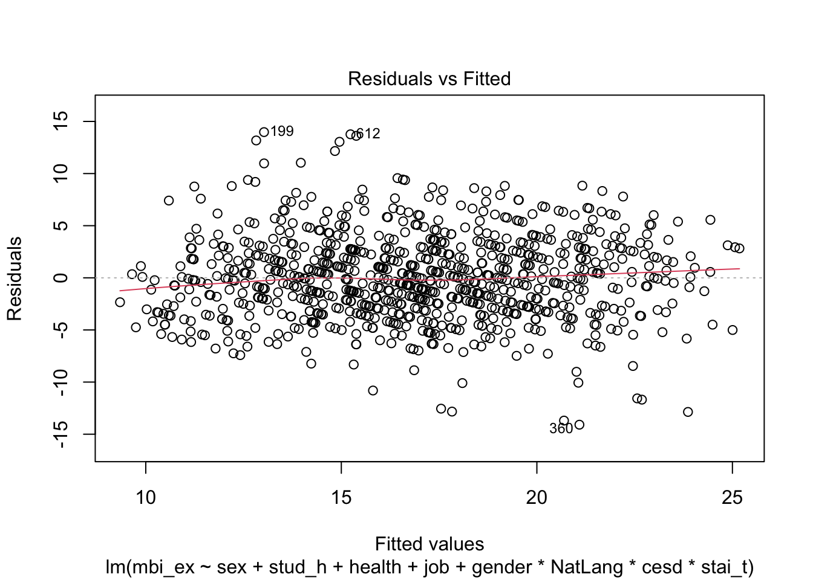

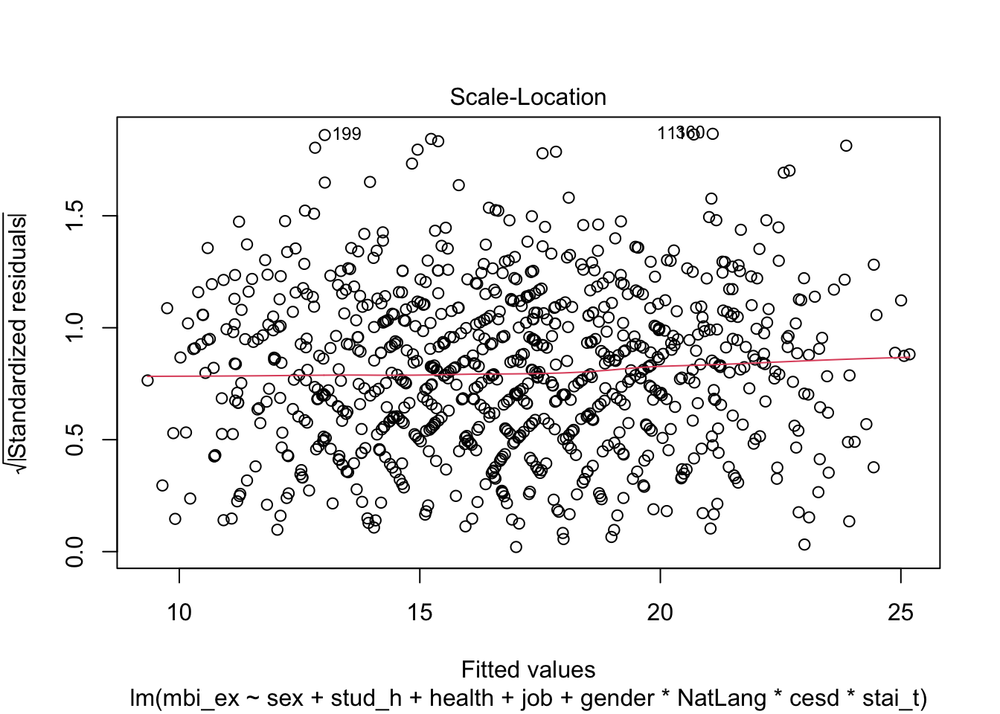
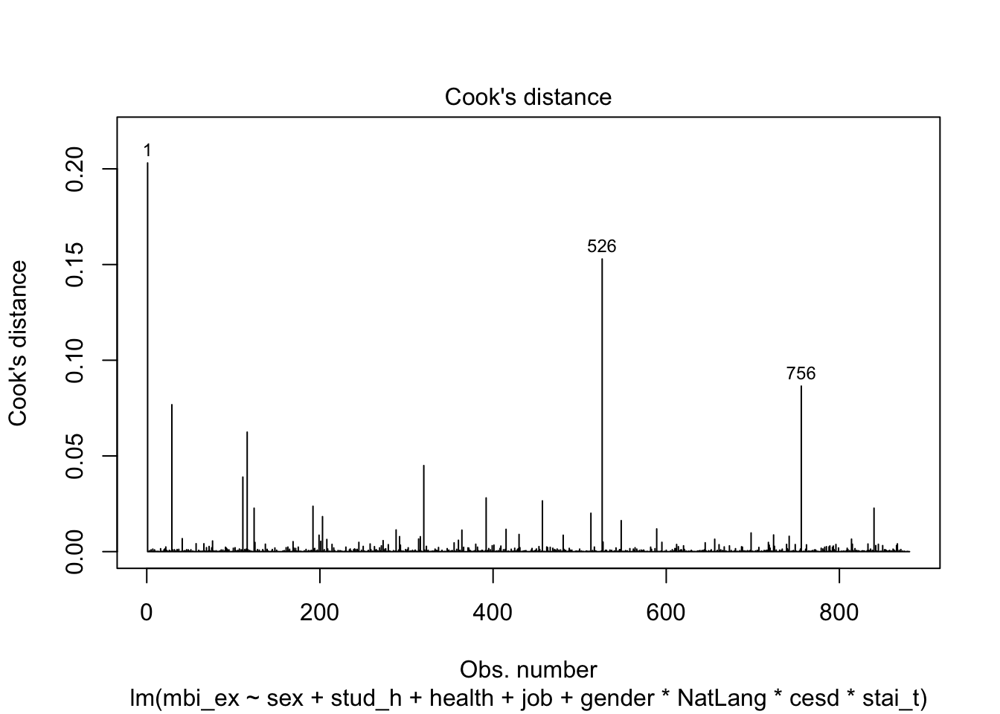
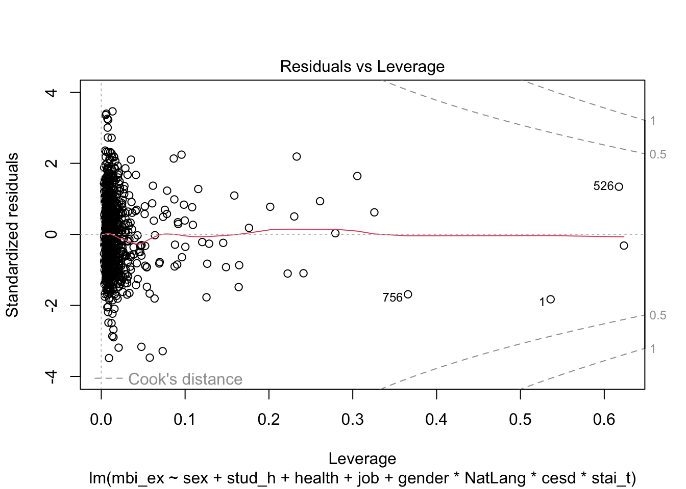

The first diagnostic model of residuals vs. fitted value shows a relatively horizontal line that bounces randomly around the zero line, suggesting linearity and constant variance for the MBI_ex linear regression model.
##MBI_Ex Normal Q-Q
plot(fit_ex, which = 2) 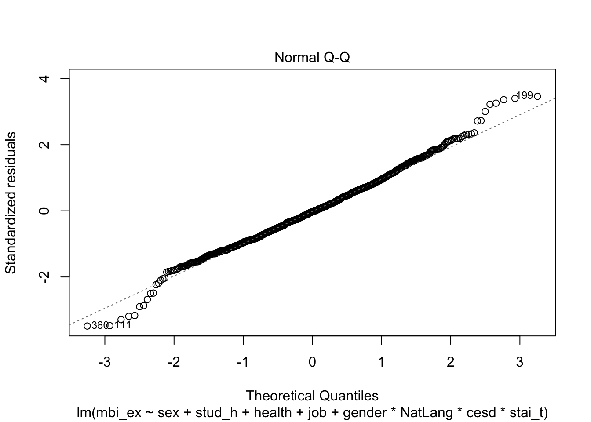
Most of the points of the MBI_ex linear regression Q-Q plot fall along the line, supporting the assumption of normality.
##MBI_Ex Scale Location
plot(fit_ex, which = 3) The Scale-Location plot of the MBI-ex linear regression model is nearly perfectly horizontal without increasing or decreasing, supporting the assumption of constant variance.
##MBI_Ex Cook's Distance
plot(fit_ex, which = 4) 
The Cook’s distance plot of the MBI_ex linear regression model measures the presence of influential outliers. There appears to be 3 outliers which are influence the model, as shown by at Obs. number at 1, 526, and 756. None of them have a Cook’s distance of 1, with the most being 0.20. However with a sample size of n = 881, 4/n = 0.00454 which means taking a closer look at the leverage of outliers in the next 2 diagnostic plots.
##MBI_Ex Residuals vs. leverage
plot(fit_ex, which = 5) Not points in the Residuals vs. Leverage plot of the MBI_ex fall outside of the dotted lines, including the 3 observations from the prior Cook’s distance plot, suggesting that these observations are not influential in the model.
##MBI_Ex Cook's Distance vs Leverage
plot(fit_ex, which = 6) 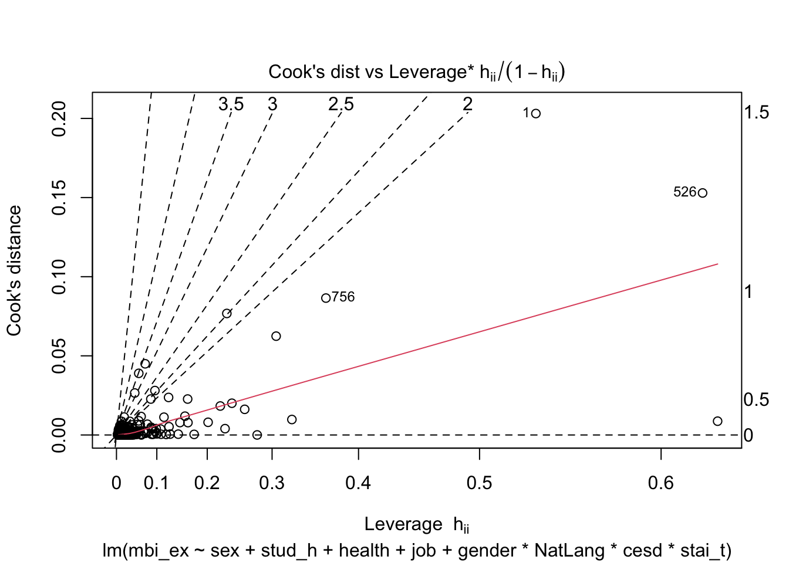
The final diagnostic plot of Cook’s Distance vs. Leverage for the MBI-ex plot shows that while there are some residuals, they don’t have strong leverage. Observation 1 & 526 both have a leverage of over 0.5, but this is paired with a low Cook’s distance making them not influential.
Overall the diagnostic models supports the goodness of fit of the emotional exhaustion MBI model and the assumptions of linearity, constant variance, and normality, but there are some outliers though they do not appear to influence the model strongly.
##Diagnostic model
fit_cy <- lm(mbi_cy ~ gender + stud_h + health + NatLang*cesd*stai_t, data = FinalRecoded2)
##MBI_ex Residuals vs. Fitted
plot(fit_cy, which = 1) 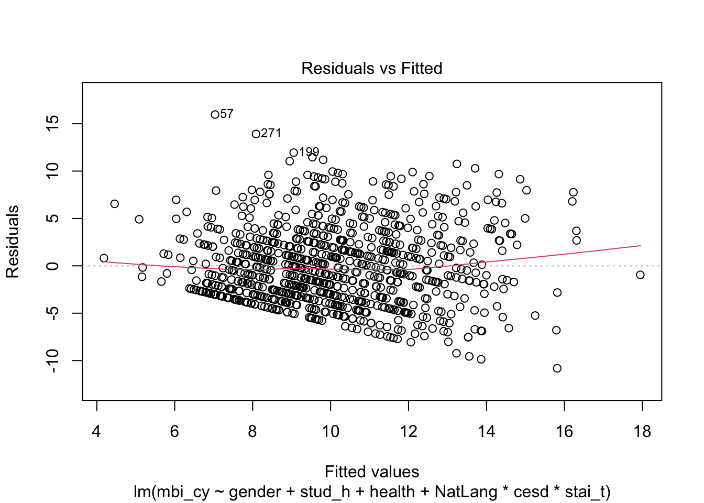
The diagnostic plot of residuals vs. fitted values for the MBI_cy linear regression model is mostly horizontal around the 0 line, though there is some slight funneling in the bottom left half of the plot. This suggests linearity but slight violation of constant variance assumption.
##MBI_cy Q-Q plot
plot(fit_cy, which = 2) 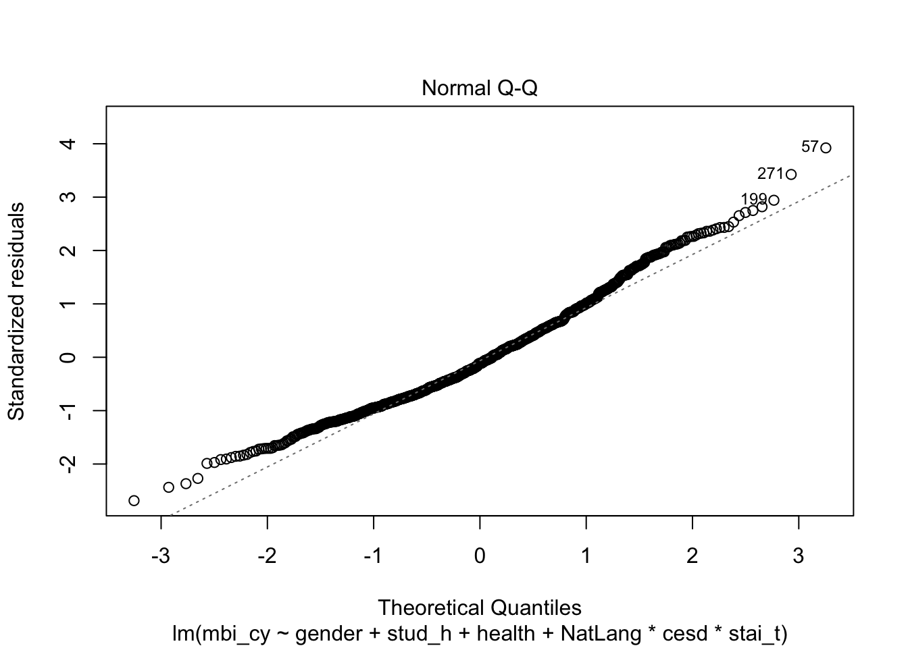
The Q-Q plot for the MBI_cy linear regression supports the assumption of normality, as the points all fall along the line.
##MBI_cy Scale Location
plot(fit_cy, which = 3) 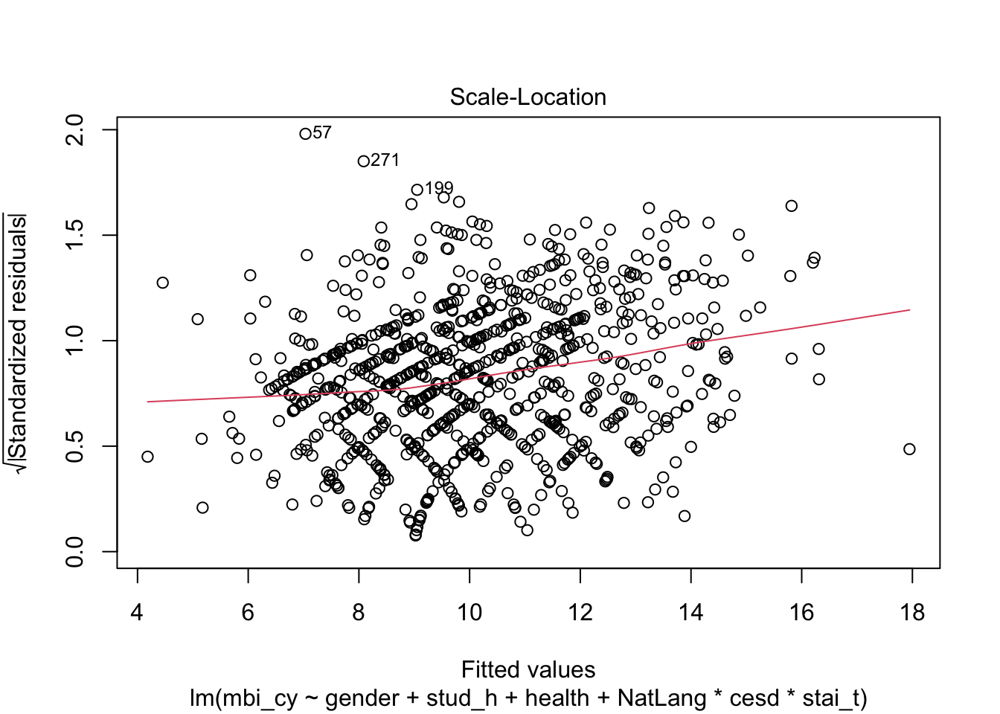
The Scale-Location plot of the MBI_cy linear regression shows some increasing trend, suggesting the model may violate the assumption of constant variance.
To test further if the model violates the assumption of constant variance, I will run a Breusch-Pagan Test on the model.
The Null Hypothesis (H0) for this test is that residuals are homoscedastic (i.e. evenly spread)
The Alternative Hypothesis (HA) hypothesis is that heteroscedasticity is present (residuals are not evenly distributed)
#Breusch-Pagan Test
library(zoo)
library(lmtest)
bptest(fit_cy)
studentized Breusch-Pagan test
data: fit_cy
BP = 41.719, df = 10, p-value = 8.413e-06With a p-value of 3.722e-06, we confidently reject the null hypothesis that residuals are homoscedastic at the 0.05 significance level. This confirms that that this model violates the assumption of linearity.
##MBI_cy Cook's distance
plot(fit_cy, which = 4) 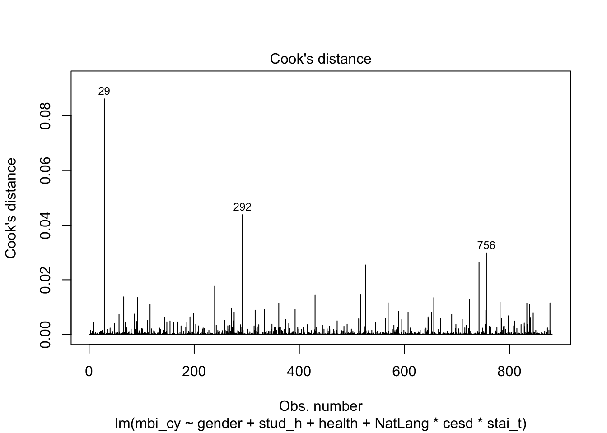
The Cook’s distance plot for the MBI-cy linear regression shows 1 influential outlier at observation number 29. This observation does not have a Cook’s distance of 1, but is greater than 4/n, which with n=881 is 0.00454, which means taking a closer look at the potential of an influential outlier.
##MBI_cy Residuals vs Leverage
plot(fit_cy, which = 5) 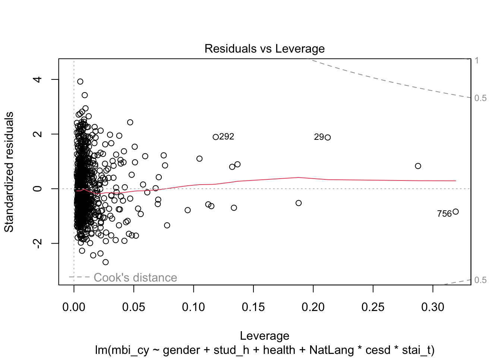
The Residuals vs Leverage plot for MBI-cy linear regression model falls within the dashed red line, suggesting that residuals lack leverage to strongly influence the model.
##MBI_cy Cook's dist. vs Leverage
plot(fit_cy, which = 6) 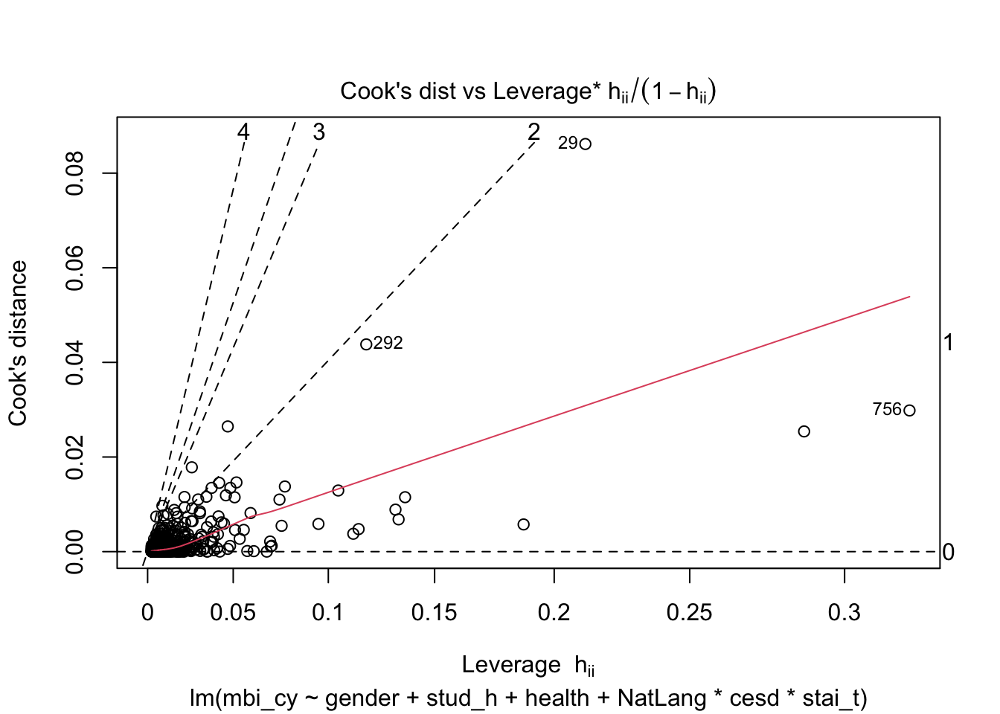
Lastly, the diagnostic plot of Cook’s dist. vs. Leverage for the MBI_cy linear regression model suggests that any outliers in the model do not have strong leverage on the model.
Overall the diagnostic models mostly support the fit of the cynicism MBI model and the assumptions of linearity and normality, as well as the lack of influential outliers. The diagnostic of scale location plot & Breusch-Pagan test suggesting violation of the assumption of constant variance.
fit_ea <- lm(mbi_ea ~ gender + stud_h + health + NatLang*cesd*stai_t, data = FinalRecoded2)
#MBI_ea Residuals vs. Fitted
plot(fit_ea, which = 1)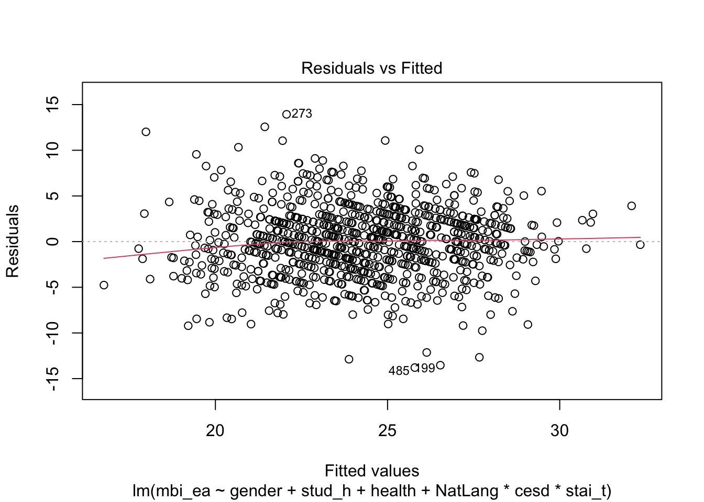
The first diagnostic plot of residuals vs. fitted values for the MBI_ea linear regression has a horizontal trend line without any funneling, supporting the assumptions of linearity and constant variance.
#MBI_ea Q-Q plot
plot(fit_ea, which = 2)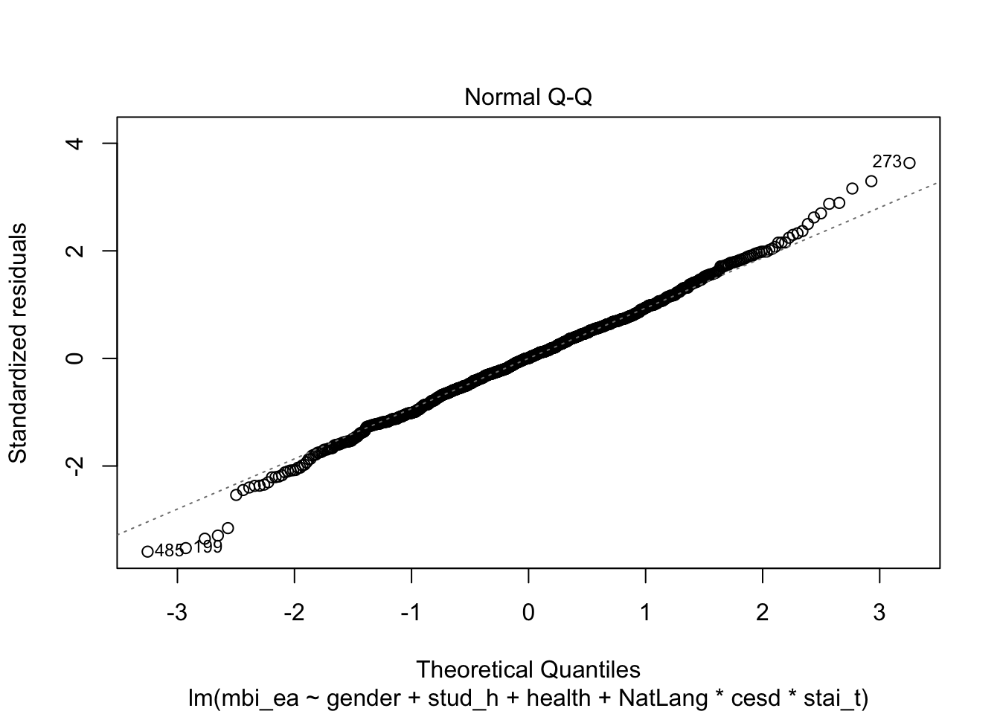
The diagnostic Q-Q plot for the MBI-ea linear regression model supports the assumption of normality, as most of the points fall along the line.
#MBI_ea scale-location
plot(fit_ea, which = 3)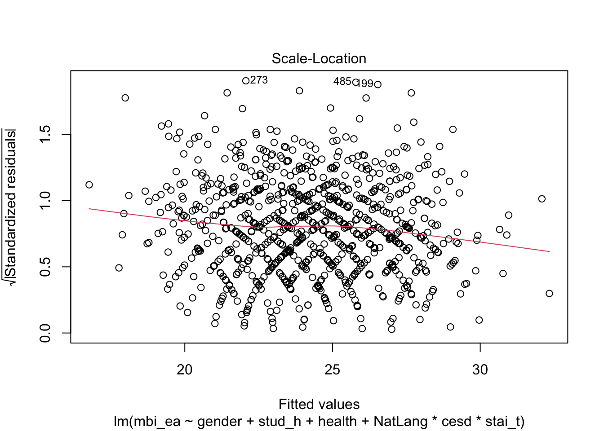
The scale-location diagnostic plot for the MBI_ea linear regression model is approximately horizontal, supporting the assumption of constant variance.
#MBI_ea
plot(fit_ea, which = 4)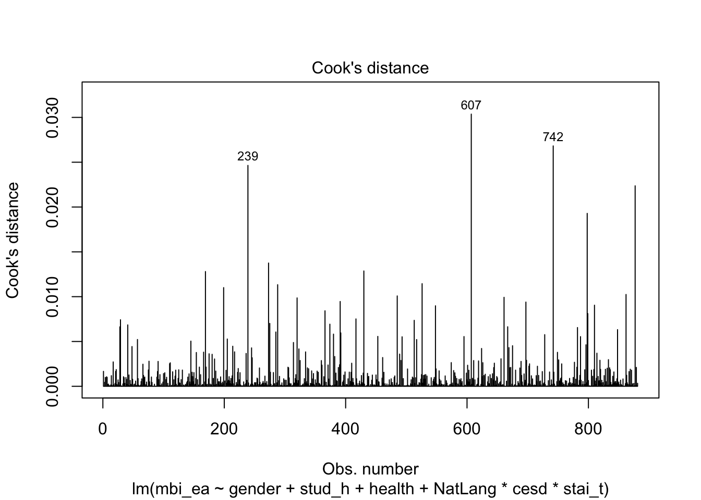
The Cook’s distance diagnostic plot for the MBI_ea linear regression model suggests the lack of influential observations (outliers). None of the observations have a Cook’s distance near 1, with the highest being less than 0.030, suggesting the outliers don’t strongly impact the model.
#MBI_ea residuals vs. leverage
plot(fit_ea, which = 5)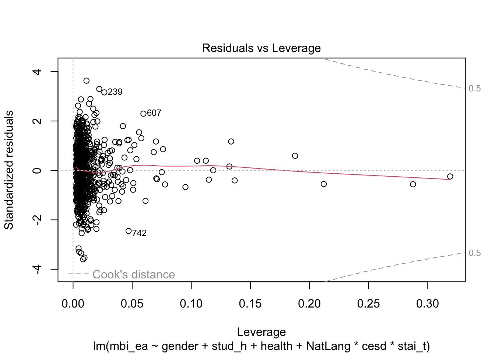
The residuals vs. leverage plot for the mbi_ea linear regression model further supports the lack of influential observations (outliers), as does the Cook’s Distances vs. Leverage plot below
#MBI_ea Cooks Distance vs. Leverage
plot(fit_ea, which = 6)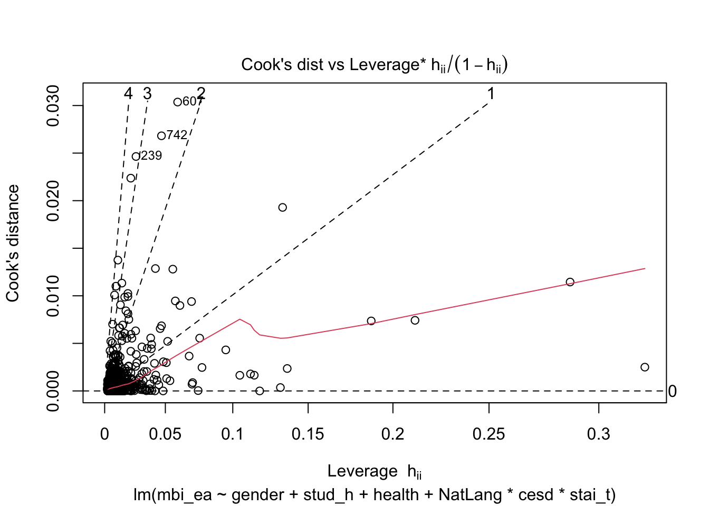
Overall these diagnostic plots support the goodness of fit of the academic efficacy MBI linear regression model, supporting the assumptions of linearity, constant variance, and normality as well as suggesting the lack of influential outliers.
The relationship between variables was further explored though visualizations. Figure 4 below is a correlation table between hours studied (stud_h), CES-D scores. STAI-T scores & the 3 MBI sub-scales. Most correlations are positive & shown in red, with the exception of mostly blue negative correlations between variables & MBI-ea (where lower scores = higher burnout). The strongest correlation is between depression & anxiety (0.7). Depression & anxiety are moderately correlated with the 3 MBI sub-scores. Hours studied has a low correlation with the other variables. Interestingly, while the 3 MBI sub-scores are supposed to be scored separately, they are moderately correlated.
#Correlation Table
FinalRecoded2# A tibble: 881 × 22
id age year sex glang part job stud_h health psyt jspe qcae_cog
<dbl> <dbl> <dbl> <dbl> <dbl> <dbl> <dbl> <dbl> <dbl> <dbl> <dbl> <dbl>
1 2 18 1 1 120 1 0 56 3 0 88 62
2 4 26 4 1 1 1 0 20 4 0 109 55
3 9 21 3 2 1 0 0 36 3 0 106 64
4 10 21 2 2 1 0 1 51 5 0 101 52
5 13 21 3 1 1 1 0 22 4 0 102 58
6 14 26 5 2 1 1 1 10 2 0 102 48
7 17 23 5 2 1 1 0 15 3 0 117 58
8 21 23 4 1 1 1 1 8 4 0 118 65
9 23 23 4 2 1 1 1 20 2 0 118 69
10 24 22 2 2 1 1 0 20 5 0 108 56
# … with 871 more rows, and 10 more variables: qcae_aff <dbl>, amsp <dbl>,
# erec_mean <dbl>, cesd <dbl>, stai_t <dbl>, mbi_ex <dbl>, mbi_cy <dbl>,
# mbi_ea <dbl>, NatLang <dbl>, gender <dbl>FinalCorr <- FinalRecoded2[, c(8,16,17,18, 19, 20)]
ggcorr(FinalCorr, method = c("everything", "pearson"), label = TRUE) + ggplot2::labs(title = "Figure 4: Correlation Table between Continuous Variables")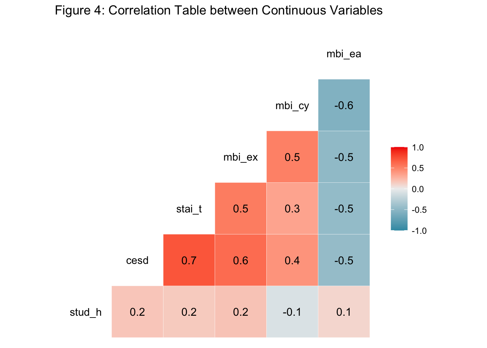
#Visualization TwoContinous,1 categorical
FinalRecoded2$NatLang <- as.factor(FinalRecoded2$NatLang)
twi_mbi_ee <- lm(mbi_ex ~ NatLang*cesd*stai_t, data = FinalRecoded2)
summary(twi_mbi_ee)
Call:
lm(formula = mbi_ex ~ NatLang * cesd * stai_t, data = FinalRecoded2)
Residuals:
Min 1Q Median 3Q Max
-14.0436 -2.7980 -0.1549 2.5024 14.0240
Coefficients:
Estimate Std. Error t value Pr(>|t|)
(Intercept) 8.5812961 4.0196295 2.135 0.0331 *
NatLang1 -1.4746673 4.1204029 -0.358 0.7205
cesd 0.3925847 0.1690935 2.322 0.0205 *
stai_t 0.0909869 0.0929279 0.979 0.3278
NatLang1:cesd -0.0535969 0.1756531 -0.305 0.7603
NatLang1:stai_t 0.0505873 0.0960912 0.526 0.5987
cesd:stai_t -0.0032561 0.0029022 -1.122 0.2622
NatLang1:cesd:stai_t 0.0005094 0.0030582 0.167 0.8677
---
Signif. codes: 0 '***' 0.001 '**' 0.01 '*' 0.05 '.' 0.1 ' ' 1
Residual standard error: 4.098 on 873 degrees of freedom
Multiple R-squared: 0.3939, Adjusted R-squared: 0.389
F-statistic: 81.04 on 7 and 873 DF, p-value: < 2.2e-16#model prediction
pred <- expand.grid(cesd=c(min(FinalRecoded2$cesd),0,max(FinalRecoded2$cesd)),stai_t=c(min(FinalRecoded2$stai_t),0,max(FinalRecoded2$stai_t)), NatLang = factor(0:1))
pred$mbi_ex <- predict(twi_mbi_ee,pred)
#new facet labels
supp.labs <- c("Non-Native Language", "Native Language")
names(supp.labs) <- c(0, 1)
ggplot(FinalRecoded2,aes(x=cesd,y=mbi_ex,color=stai_t)) +geom_point()+facet_grid(~NatLang, labeller = labeller(NatLang = supp.labs)) +
geom_line(data=pred,aes(group=stai_t)) + labs(title = "Figure 5: Plot Emotional Burnout by Gender & Native Language", x = "CES-D Depression Score", y = "MBI_ex Score") + theme(legend.position="bottom") 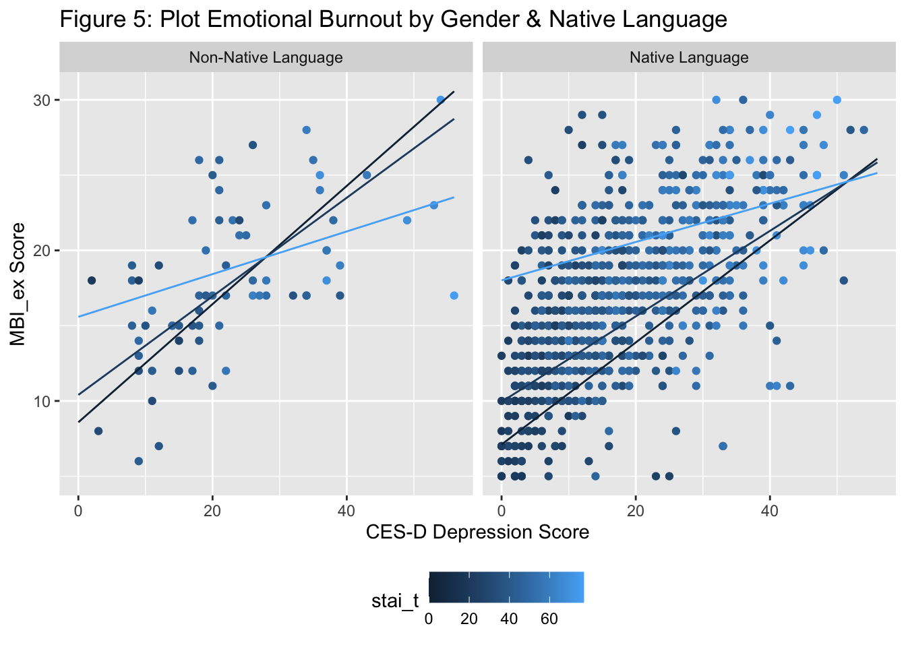
Figure 5 shows the 3-way interaction of gender, depression scores, & NatLang on MBI-ex scores. The graph shows that depression & anxiety scores are positively correlated, as are depression & MBI_ex scores. The slope of the 2 darker lines of MBI-ex score vs. CES-D are slightly steeper for Non-Native med students than Native students the plot, suggesting that when Non-Native & Native med students have the same CES-D score, the Native med student is predicted to have higher emotional exhaustion burnout.
Returning to my research question:
Why are some medical students more likely to experience burnout than others?
There is statistical supports my hypothesis that medical students whose native language was a commonly spoken language where they are in medical school will have lower burnout than medical students speaking the non-native language on the MBI emotional exhaustion sub-scale, but not the MBI cynicism or MBI academic efficacy sub-scores. With p-score of 0.0283 in the Welch’s One-Sided T-test, I reject the hypothesis that there is no difference in the mean MBI-ex scores between native & not-native language speaking students. The difference in means between native & native language speakers on the MBI-cy & MBI-ea are not statistically significant.
Through further T-tests discovered that there was statistically significant difference in anxiety & depression levels for native and non-native language speaking medical students in the direction I expected. Through running various linear regression models, I found that the importance 3-way interaction between NatLang x Anxiety x Depression was a strong explanatory variable for burnout on all three sub scales based on the Adjusted-R Squared values. Gender, hours studied, and health satisfaction also explain why some medical students are more likely to experience burnout than others on all three sub scales. For emotional exhaustion burnout, having a partner also impacted burnout.
Based on Adjusted R-squared values, AIC values, and diagnostic plots, the linear regression models are a good fit to explain variance in the outcome variables of burnout on each of the 3 MBI sub-scales. In the MBI-cy sub-scale, there was a violation to the assumption of constant variance in the Scale Location plot & Breusch-Pagan Test. In the linear regression models, Native Language was found to be a statistically significant predictor of emotional exhaustion burnout, but not cynicism or academic efficacy burn-out. A systematic review of burnout found that emotional exhaustion burnout, characterized by emotional & physical fatigue, is most frequently used to measure the concept burnout (Doulougeri et al., 2016).
This current sample had relatively few non-native language speaking medical students (71) & was in the country of Switzerland, meaning the findings can’t be generalized. Future research should be done testing the impact of speaking a native language on burnout in a larger, global sample of medical students. It also might be that speaking a non-native language is proxy for immigration status, so that should be examined as well. There were also many interesting interactions with NatLang in the models, including with gender, anxiety, & depression. Future research should be done to understand the relationship between these variable in order to make more meaningful interventions. Additionally, it is important to investigate potential protective factors against burnout such as health satisfaction, as there were not many identified in this sample.
Conducting this final project was challenging but interesting. Having 3 outcome variables was a lot of work to conduct tests for, & the 3 & 4-way interactions were not easy to interpret or visualize. Overall I am proud of this work & the statistical knowledge I have gained in this course.
Medical students & health care workers around the world do life saving work, under stressful & long work conditions. It is critical that we better understand, identify, & treat the mental health needs & burnout of health care workers. It is neither fair nor feasible to expect health care workers to sacrifice their health & well-being in service of others.
Carrard, V., Bourquin, C., Berney, S, Schlegel, K., Gaume, J., Bart, P-A., Preisig M., Mast, M. A., & Berney, A. (2022). The relationship between medical students’ empathy, mental health, and burnout: A cross-sectional study, Medical Teacher, 44:12, 1392-1399, DOI: 10.1080/0142159X.2022.2098708
Doulougeri, K., Georganta, K., & Montgomery, A. (2016). “Diagnosing” burnout among healthcare professionals: Can we find consensus?, Cogent Medicine, 3:1, DOI: 10.1080/2331205X.2016.1237605
Gradiski, I. P., Borovecki, A., Ćurković, M., San-Martín, M., Delgado Bolton, R. C., & Vivanco, L. (2022). Burnout in International Medical Students: Characterization of Professionalism and Loneliness as Predictive Factors of Burnout. International journal of environmental research and public health, 19(3), 1385. https://doi.org/10.3390/ijerph19031385
Goebert., D., Thompson., D., Takeshita., J., Beach, C., Bryson, P., Ephgrave, K., Kent. A., Kunkel., M., Schechter., J., Tate., J. (2009). Depressive Symptoms in Medical Students and Residents: A Multischool Study. Academic Medicine 84(2):p 236-241, DOI: 10.1097/ACM.0b013e31819391bb
Hlavac, Marek (2022). stargazer: Well-Formatted Regression and Summary Statistics Tables. R package version 5.2.3. https://CRAN.R-project.org/package=stargazer
Jennings, M.L. Medical Student Burnout: Interdisciplinary Exploration and Analysis. J Med Humanit 30, 253–269 (2009). https://doi.org/10.1007/s10912-009-9093-5
Kużelewska,E. (2016).Language Policy in Switzerland. Studies in Logic, Grammar and Rhetoric,45(1) 125-140. https://doi.org/10.1515/slgr-2016-0020
Maslach, C., Jackson, S.E., & Jackson, Leiter, M. P. (Eds.) (1996). Maslach Burnout Inventory manual (3rd ed.).
Paturel, A. (2020). Healing the very youngest healers. American Association of Medical Colleges (AAMC). https://www.aamc.org/news-insights/healing-very-youngest-healers#:~:text=In%20a%20recent%20study%20%2C%209.4,as%20their%20same%2Dage%20peers.
Peters E. (2018). Compassion fatigue in nursing: A concept analysis. Nursing forum, 53(4), 466–480. https://doi.org/10.1111/nuf.12274
Radloff, L.S. (1977). The CES-D Scale: a self-report depression scale for research in the general population. Applied Psychological Measurement, 1:385-401.
Rodriguez, S. Y. S., Carlotta, M. S.. (2017). Predictors of Burnout Syndrome in psychologists. Estudos De Psicologia (campinas), 34(Estud. psicol. (Campinas), 2017 34(1)), 141–150. https://doi.org/10.1590/1982-02752017000100014
Shin, H. S., Park, H., & Lee, Y. M. (2022). The relationship between medical students’ empathy and burnout levels by gender and study years. Patient education and counseling, 105(2), 432–439. https://doi.org/10.1016/j.pec.2021.05.036
Tiesman, H., Weissman, D., Stone., D., Quinlan, K., & Chosewood, L. (2021). Suicide Prevention for Healthcare Workers. CDC. https://blogs.cdc.gov/niosh-science-blog/2021/09/17/suicide-prevention-hcw/
Williams, B., Beovich, B. Psychometric properties of the Jefferson Scale of Empathy: a COSMIN systematic review protocol. Syst Rev 8, 319 (2019). https://doi.org/10.1186/s13643-019-1240-0
Yahya, M. S., Abutiheen, A. A., & Al- Haidary, A. F. (2021). Burnout among medical students of the University of Kerbala and its correlates. Middle East Current Psychiatry, Ain Shams University, 28(1), 78. https://doi.org/10.1186/s43045-021-00152-2